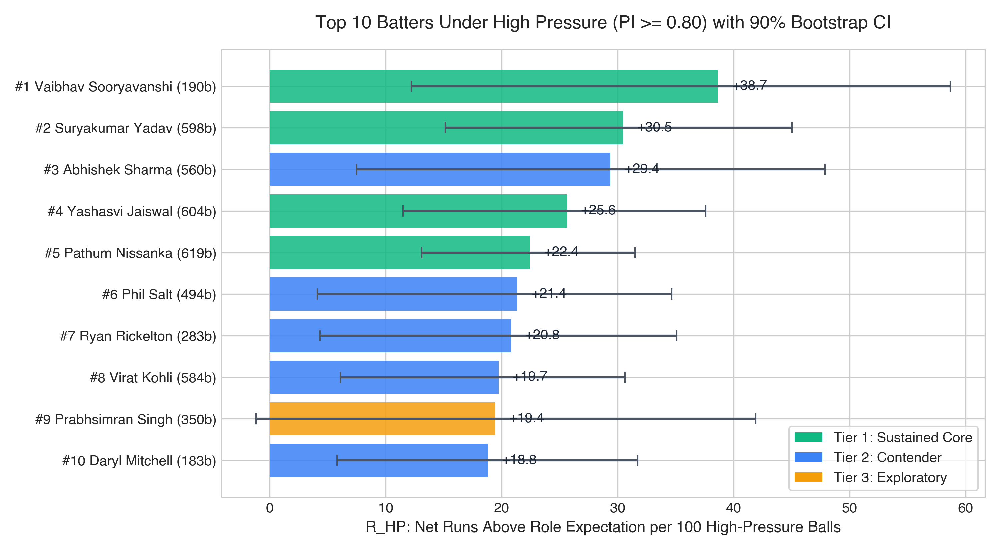
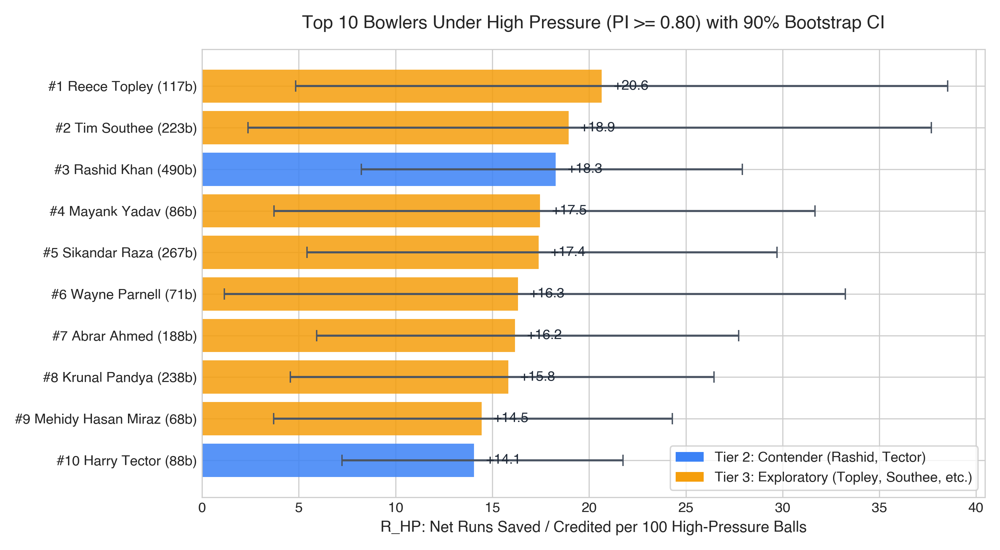
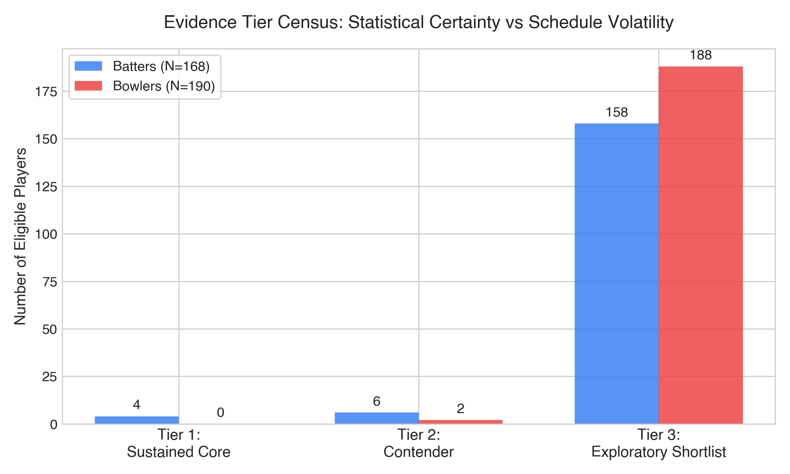
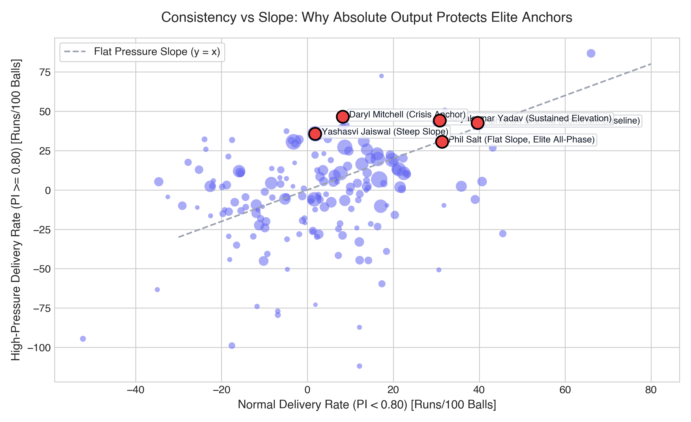
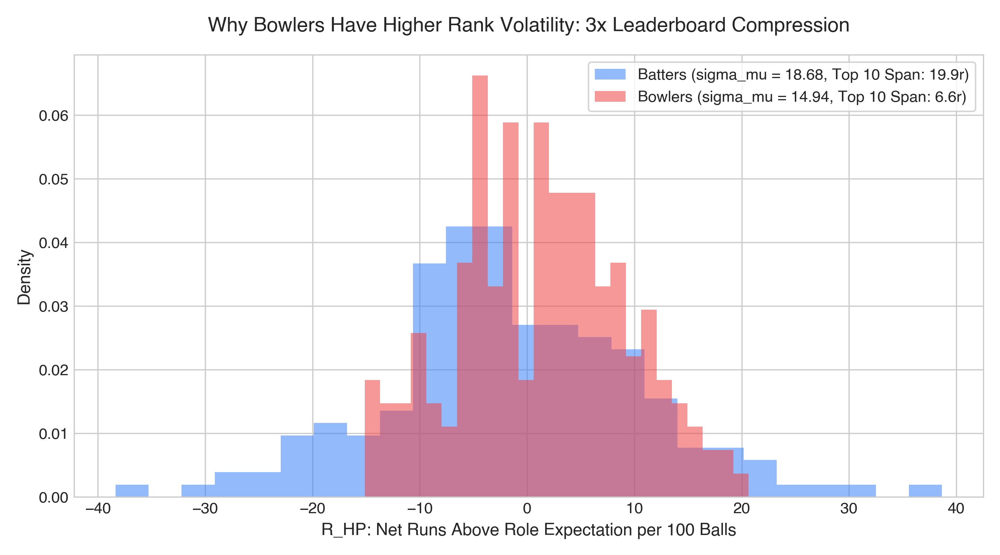
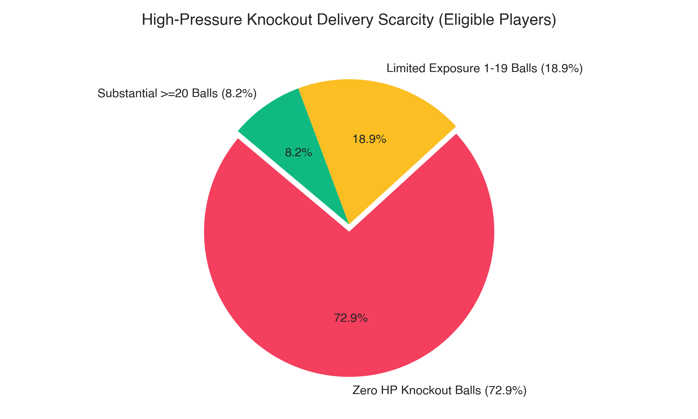

<!DOCTYPE html>
<html lang="en">
<head>
  <meta charset="UTF-8">
  <meta name="viewport" content="width=device-width, initial-scale=1.0">
  <title>SupeRR Selector Season 2 — Quantifying Cricket Performance Under Pressure</title>
  <style>
    :root {
      --bg-dark: #090D16;
      --bg-card: #131B2E;
      --bg-card-hover: #1A253D;
      --border-color: #233354;
      --border-focus: #3B82F6;
      --text-main: #F1F5F9;
      --text-muted: #94A3B8;
      --text-dim: #64748B;
      --accent-cyan: #06B6D4;
      --accent-blue: #3B82F6;
      --accent-emerald: #10B981;
      --accent-amber: #F59E0B;
      --accent-rose: #F43F5E;
      --tier-1-bg: rgba(16, 185, 129, 0.15);
      --tier-1-border: #10B981;
      --tier-2-bg: rgba(59, 130, 246, 0.15);
      --tier-2-border: #3B82F6;
      --tier-3-bg: rgba(245, 158, 11, 0.15);
      --tier-3-border: #F59E0B;
    }

    * {
      box-sizing: border-box;
      margin: 0;
      padding: 0;
    }

    body {
      font-family: -apple-system, BlinkMacSystemFont, "Segoe UI", Roboto, Helvetica, Arial, sans-serif;
      background-color: var(--bg-dark);
      color: var(--text-main);
      overflow: hidden;
      height: 100vh;
      width: 100vw;
      display: flex;
      flex-direction: column;
    }

    /* Top Navigation Bar */
    header {
      height: 56px;
      background: rgba(15, 23, 42, 0.95);
      border-bottom: 1px solid var(--border-color);
      display: flex;
      align-items: center;
      justify-content: space-between;
      padding: 0 24px;
      z-index: 100;
      flex-shrink: 0;
      backdrop-filter: blur(10px);
    }

    .brand {
      display: flex;
      align-items: center;
      gap: 12px;
      font-weight: 700;
      font-size: 16px;
      letter-spacing: 0.5px;
    }

    .brand-badge {
      background: linear-gradient(135deg, var(--accent-cyan), var(--accent-blue));
      color: #000;
      font-size: 11px;
      font-weight: 800;
      padding: 3px 8px;
      border-radius: 4px;
      text-transform: uppercase;
    }

    .nav-controls {
      display: flex;
      align-items: center;
      gap: 12px;
    }

    .btn {
      background: var(--bg-card);
      border: 1px solid var(--border-color);
      color: var(--text-main);
      padding: 6px 14px;
      border-radius: 6px;
      font-size: 13px;
      font-weight: 600;
      cursor: pointer;
      display: inline-flex;
      align-items: center;
      gap: 6px;
      transition: all 0.2s ease;
    }

    .btn:hover {
      background: var(--bg-card-hover);
      border-color: var(--border-focus);
    }

    .btn-primary {
      background: var(--accent-blue);
      border-color: var(--accent-blue);
      color: #FFF;
    }
    .btn-primary:hover {
      background: #2563EB;
    }

    .slide-select {
      background: var(--bg-card);
      border: 1px solid var(--border-color);
      color: var(--text-main);
      padding: 6px 12px;
      border-radius: 6px;
      font-size: 13px;
      cursor: pointer;
    }

    /* Deck Container */
    #deck {
      flex: 1;
      position: relative;
      overflow: hidden;
    }

    .slide {
      position: absolute;
      top: 0;
      left: 0;
      width: 100%;
      height: 100%;
      opacity: 0;
      visibility: hidden;
      transition: opacity 0.3s ease, transform 0.3s ease;
      transform: translateY(12px);
      padding: 32px 48px;
      overflow-y: auto;
      display: flex;
      flex-direction: column;
    }

    .slide.active {
      opacity: 1;
      visibility: visible;
      transform: translateY(0);
    }

    /* Slide Typography */
    .slide-header {
      margin-bottom: 24px;
      flex-shrink: 0;
    }

    .slide-category {
      font-size: 12px;
      font-weight: 700;
      text-transform: uppercase;
      letter-spacing: 1.5px;
      color: var(--accent-cyan);
      margin-bottom: 4px;
    }

    .slide-title {
      font-size: 28px;
      font-weight: 800;
      color: #FFF;
      letter-spacing: -0.5px;
      display: flex;
      align-items: center;
      gap: 12px;
    }

    .slide-subtitle {
      font-size: 15px;
      color: var(--text-muted);
      margin-top: 4px;
    }

    /* Content Layouts */
    .slide-body {
      flex: 1;
      display: flex;
      gap: 28px;
      min-height: 0;
    }

    .col {
      flex: 1;
      display: flex;
      flex-direction: column;
      gap: 18px;
      min-width: 0;
    }

    .col-2 { flex: 2; }
    .col-1 { flex: 1; }

    /* Cards & Components */
    .card {
      background: var(--bg-card);
      border: 1px solid var(--border-color);
      border-radius: 10px;
      padding: 20px;
      display: flex;
      flex-direction: column;
      gap: 12px;
    }

    .card-title {
      font-size: 16px;
      font-weight: 700;
      color: #FFF;
      display: flex;
      align-items: center;
      gap: 8px;
    }

    .metric-grid {
      display: grid;
      grid-template-columns: repeat(auto-fit, minmax(130px, 1fr));
      gap: 12px;
    }

    .metric-box {
      background: rgba(15, 23, 42, 0.6);
      border: 1px solid var(--border-color);
      border-radius: 8px;
      padding: 12px 14px;
      text-align: left;
    }

    .metric-val {
      font-size: 22px;
      font-weight: 800;
      color: #FFF;
      letter-spacing: -0.5px;
    }

    .metric-val.emerald { color: var(--accent-emerald); }
    .metric-val.cyan { color: var(--accent-cyan); }
    .metric-val.amber { color: var(--accent-amber); }
    .metric-val.rose { color: var(--accent-rose); }

    .metric-lbl {
      font-size: 11px;
      color: var(--text-muted);
      font-weight: 600;
      text-transform: uppercase;
      letter-spacing: 0.5px;
      margin-top: 2px;
    }

    /* Callout Boxes */
    .callout {
      border-left: 4px solid var(--accent-blue);
      background: rgba(59, 130, 246, 0.08);
      padding: 14px 18px;
      border-radius: 0 8px 8px 0;
      font-size: 13.5px;
      line-height: 1.5;
      color: var(--text-main);
    }

    .callout.amber {
      border-left-color: var(--accent-amber);
      background: rgba(245, 158, 11, 0.08);
    }

    .callout.emerald {
      border-left-color: var(--accent-emerald);
      background: rgba(16, 185, 129, 0.08);
    }

    .callout.rose {
      border-left-color: var(--accent-rose);
      background: rgba(244, 63, 94, 0.08);
    }

    /* Tables */
    .table-container {
      overflow-x: auto;
      border: 1px solid var(--border-color);
      border-radius: 8px;
      background: var(--bg-card);
    }

    table {
      width: 100%;
      border-collapse: collapse;
      font-size: 13px;
      text-align: left;
    }

    th {
      background: rgba(15, 23, 42, 0.9);
      padding: 10px 12px;
      font-weight: 700;
      color: var(--text-muted);
      border-bottom: 1px solid var(--border-color);
      text-transform: uppercase;
      font-size: 11px;
      letter-spacing: 0.5px;
    }

    td {
      padding: 9px 12px;
      border-bottom: 1px solid rgba(35, 51, 84, 0.5);
      color: var(--text-main);
    }

    tr:last-child td {
      border-bottom: none;
    }

    tr:hover td {
      background: rgba(255, 255, 255, 0.02);
    }

    .rank-cell {
      font-weight: 800;
      width: 36px;
      text-align: center;
      color: var(--accent-cyan);
    }

    .player-name {
      font-weight: 700;
      color: #FFF;
    }

    .rate-val {
      font-weight: 800;
      font-variant-numeric: tabular-nums;
    }

    .rate-val.pos { color: var(--accent-emerald); }
    .rate-val.neg { color: var(--accent-rose); }

    /* Tier Badges */
    .tier-badge {
      display: inline-block;
      padding: 2px 7px;
      border-radius: 4px;
      font-size: 11px;
      font-weight: 700;
      text-transform: uppercase;
    }

    .tier-1 {
      background: var(--tier-1-bg);
      border: 1px solid var(--tier-1-border);
      color: var(--accent-emerald);
    }

    .tier-2 {
      background: var(--tier-2-bg);
      border: 1px solid var(--tier-2-border);
      color: var(--accent-blue);
    }

    .tier-3 {
      background: var(--tier-3-bg);
      border: 1px solid var(--tier-3-border);
      color: var(--accent-amber);
    }

    /* Images / Charts */
    .chart-container {
      background: var(--bg-card);
      border: 1px solid var(--border-color);
      border-radius: 10px;
      padding: 12px;
      display: flex;
      flex-direction: column;
      align-items: center;
      justify-content: center;
      min-height: 0;
      flex: 1;
    }

    .chart-container img {
      max-width: 100%;
      max-height: 100%;
      object-fit: contain;
      border-radius: 6px;
    }

    /* Footer & Speaker Notes Drawer */
    footer {
      height: 38px;
      background: rgba(15, 23, 42, 0.95);
      border-top: 1px solid var(--border-color);
      display: flex;
      align-items: center;
      justify-content: space-between;
      padding: 0 24px;
      font-size: 12px;
      color: var(--text-dim);
      flex-shrink: 0;
    }

    #notes-drawer {
      position: fixed;
      bottom: 38px;
      left: 0;
      width: 100%;
      max-height: 280px;
      background: #0B132B;
      border-top: 2px solid var(--accent-blue);
      padding: 20px 32px;
      overflow-y: auto;
      transform: translateY(100%);
      transition: transform 0.25s ease-out;
      z-index: 99;
      box-shadow: 0 -10px 25px rgba(0, 0, 0, 0.6);
    }

    #notes-drawer.open {
      transform: translateY(0);
    }

    .notes-title {
      font-size: 13px;
      font-weight: 800;
      text-transform: uppercase;
      letter-spacing: 1px;
      color: var(--accent-cyan);
      margin-bottom: 8px;
      display: flex;
      justify-content: space-between;
      align-items: center;
    }

    .notes-body {
      font-size: 14px;
      line-height: 1.6;
      color: #E2E8F0;
    }

    /* Grid utilities */
    .grid-2 {
      display: grid;
      grid-template-columns: 1fr 1fr;
      gap: 20px;
    }

    .grid-3 {
      display: grid;
      grid-template-columns: repeat(3, 1fr);
      gap: 16px;
    }

    ul.clean-list {
      list-style: none;
      display: flex;
      flex-direction: column;
      gap: 10px;
    }

    ul.clean-list li {
      position: relative;
      padding-left: 20px;
      font-size: 13.5px;
      line-height: 1.5;
      color: var(--text-main);
    }

    ul.clean-list li::before {
      content: "•";
      position: absolute;
      left: 4px;
      color: var(--accent-cyan);
      font-weight: bold;
      font-size: 16px;
      line-height: 1;
    }

    /* Print styles */
    @media print {
      body { overflow: visible; height: auto; }
      header, footer, #notes-drawer { display: none; }
      .slide {
        position: relative !important;
        opacity: 1 !important;
        visibility: visible !important;
        transform: none !important;
        page-break-after: always;
        height: 100vh;
        padding: 40px !important;
      }
    }
  </style>
</head>
<body>

  <!-- Header -->
  <header>
    <div class="brand">
      <span class="brand-badge">SupeRR Selector</span>
      <span>Season 2 &bull; Pressure-Performance Analytics</span>
    </div>
    <div class="nav-controls">
      <select id="slide-jump" class="slide-select" onchange="jumpToSlide(this.value)">
        <!-- Options populated dynamically -->
      </select>
      <button class="btn" onclick="prevSlide()" title="Previous Slide (←)">
        <span>&larr;</span> Prev
      </button>
      <button class="btn btn-primary" onclick="nextSlide()" title="Next Slide (→ or Space)">
        Next <span>&rarr;</span>
      </button>
      <button class="btn" id="notes-toggle-btn" onclick="toggleNotes()" title="Toggle Speaker Notes (N or S)">
        🎙️ Notes
      </button>
      <button class="btn" onclick="toggleFullscreen()" title="Toggle Fullscreen (F)">
        ⛶ Fullscreen
      </button>
    </div>
  </header>

  <!-- Slide Deck -->
  <main id="deck">

    <!-- SLIDE 1: Title -->
    <section class="slide active" id="slide-1" data-title="Executive Summary & Title">
      <div class="slide-header">
        <div class="slide-category">Final Competition Submission</div>
        <h1 class="slide-title">Quantifying T20 Performance Under Pressure</h1>
        <div class="slide-subtitle">An Evidence-Tiered Empirical Bayes Framework for High-Leverage Talent Identification</div>
      </div>
      <div class="slide-body">
        <div class="col col-1">
          <div class="card" style="height: 100%; justify-content: center; gap: 20px;">
            <div style="display: flex; flex-direction: column; gap: 8px;">
              <span class="tier-badge tier-1" style="width: fit-content;">Frozen Methodology Baseline: 5fb7401</span>
              <h2 style="font-size: 24px; color: #FFF; font-weight: 800;">Turning Raw Tactical Leverage into Actionable Selection Truth</h2>
              <p style="color: var(--text-muted); font-size: 14.5px; line-height: 1.6;">
                In high-stakes franchise cricket, traditional metrics either wash out crisis execution in aggregate volume, or chase high-variance small-sample spikes. We present an end-to-end mathematical architecture that isolates genuine high-leverage skill from statistical noise.
              </p>
            </div>
            <div class="metric-grid">
              <div class="metric-box">
                <div class="metric-val cyan">802</div>
                <div class="metric-lbl">Senior Matches</div>
              </div>
              <div class="metric-box">
                <div class="metric-val emerald">188,761</div>
                <div class="metric-lbl">Total Deliveries</div>
              </div>
              <div class="metric-box">
                <div class="metric-val amber">24,198</div>
                <div class="metric-lbl">HP Balls (PI &ge; 0.80)</div>
              </div>
              <div class="metric-box">
                <div class="metric-val">358</div>
                <div class="metric-lbl">Eligible Players</div>
              </div>
            </div>
            <div class="callout emerald">
              <strong>Core Estimand ($R_{HP}$):</strong> Role-adjusted runs above expectation per 100 high-pressure deliveries, stabilized via Empirical Bayes shrinkage and validated via 500-iteration match-cluster resampling.
            </div>
          </div>
        </div>
        <div class="col col-1">
          <div class="card" style="height: 100%; justify-content: space-between;">
            <div class="card-title">Executive Takeaways & Framework Architecture</div>
            <ul class="clean-list">
              <li><strong>Objective Leverage Definition:</strong> Evaluates the top 20% highest win-probability swing deliveries ($PI \ge 0.80$), separating tactical match leverage from narrative hype.</li>
              <li><strong>Shrinkage-Controlled Estimand:</strong> Prevents low-sample flukes through role-specific Empirical Bayes priors ($\sigma_\mu = 18.68$ for batters, $14.94$ for bowlers).</li>
              <li><strong>The Slope Fallacy Solved:</strong> Rejects delta/slope metrics that artificially penalize dominant anchors like Phil Salt and Abhishek Sharma.</li>
              <li><strong>Asymmetric Dispersion Uncovered:</strong> Bowler talent variance is tightly compressed (6.59-run top 10 spread vs 19.87 for batters), creating clustered tiers rather than isolated hierarchies.</li>
              <li><strong>Honest Uncertainty Communication:</strong> Every player receives empirical rank confidence intervals and exhaustive evidence-tier assignments.</li>
            </ul>
            <div style="font-size: 12px; color: var(--text-dim); text-align: right;">
              SupeRR Selector Season 2 &bull; Branch: model-repair
            </div>
          </div>
        </div>
      </div>
      <div class="slide-notes-content" style="display: none;">
Good afternoon, panel. Today we present our final analytics framework for SupeRR Selector Season 2. In professional T20 cricket, franchises pay millions for players believed to possess 'clutch' ability. Yet, almost universally, clutch is evaluated using narrative bias, tiny knockout sample sizes, or flawed delta metrics.
Over the past five years across 802 senior IPL and T20I matches, our mission was to build a statistically defensible, fully reproducible pipeline that isolates genuine high-leverage execution from statistical noise. We present not merely a leaderboard, but an analytical system that distinguishes proven match-winners from high-variance gambles.
      </div>
    </section>

    <!-- SLIDE 2: The Core Dilemma -->
    <section class="slide" id="slide-2" data-title="The Core Dilemma: Why Pressure Fails">
      <div class="slide-header">
        <div class="slide-category">Problem Formulation</div>
        <h1 class="slide-title">The Core Dilemma: Why Measuring Pressure Fails</h1>
        <div class="slide-subtitle">Three structural flaws that invalidate traditional 'clutch' and 'pressure' metrics</div>
      </div>
      <div class="slide-body">
        <div class="col col-1">
          <div class="card" style="border-left: 4px solid var(--accent-rose); height: 100%;">
            <div class="card-title" style="color: var(--accent-rose);">1. The Narrative & Knockout Trap</div>
            <p style="font-size: 13.5px; color: var(--text-muted); line-height: 1.6;">
              Media and pundits routinely judge "big-match temperament" on 2 or 3 playoff innings. In statistical reality, playoff deliveries are catastrophically sparse.
            </p>
            <div class="callout rose">
              <strong>The 72.9% Zero-Exposure Fact:</strong> Across 5 years of senior cricket, 261 out of 358 eligible players (72.9%) faced <em>zero</em> high-pressure knockout deliveries. Relying on knockouts is measuring randomness.
            </div>
            <ul class="clean-list">
              <li>Median career knockout HP balls: <strong>0 balls</strong>.</li>
              <li>Only 43 players in the world have &ge;25 career knockout HP balls.</li>
              <li>Scaling regular ratings by knockouts poisons robust data with extreme noise.</li>
            </ul>
          </div>
        </div>
        <div class="col col-1">
          <div class="card" style="border-left: 4px solid var(--accent-amber); height: 100%;">
            <div class="card-title" style="color: var(--accent-amber);">2. The Flawed 'Slope' Fallacy</div>
            <p style="font-size: 13.5px; color: var(--text-muted); line-height: 1.6;">
              Many public analytics models define clutch as the delta ($\Delta = 	ext{Rate}_{HP} - 	ext{Rate}_{	ext{Normal}}$).
            </p>
            <div class="callout amber">
              <strong>The Anchor Paradox:</strong> Elite anchors who destroy opposition bowling in all game states have near-zero or negative slopes. Slope metrics penalize elite players while rewarding bad players whose numbers spike from terrible to mediocre.
            </div>
            <ul class="clean-list">
              <li><strong>Phil Salt:</strong> Normal +31.33, HP +30.67 &rarr; $\Delta = -0.66$ (Penalized as "choker" despite being #6 in the world!).</li>
              <li><strong>Alishan Sharafu:</strong> Normal -43.66, HP +11.22 &rarr; $\Delta = +54.88$ (Crowned "most clutch" despite being an overall liability).</li>
            </ul>
          </div>
        </div>
        <div class="col col-1">
          <div class="card" style="border-left: 4px solid var(--accent-cyan); height: 100%;">
            <div class="card-title" style="color: var(--accent-cyan);">3. The Illusion of Point Estimates</div>
            <p style="font-size: 13.5px; color: var(--text-muted); line-height: 1.6;">
              Presenting a single rank without uncertainty intervals deceives coaching staffs and franchise owners into paying millions for illusory ranking differences.
            </p>
            <div class="callout cyan">
              <strong>Overlap & Dispersion:</strong> A bowler ranked #3 and a bowler ranked #12 frequently have overlapping 90% confidence intervals. Selection requires honest evidence tiers, not rigid hierarchies.
            </div>
            <ul class="clean-list">
              <li>Bowler talent variance is tightly compressed ($\sigma_\mu = 14.94$).</li>
              <li>Unshrunk rates crown volatile 50-ball wonders.</li>
              <li>Empirical Bayes shrinkage + bootstrap intervals restore decision integrity.</li>
            </ul>
          </div>
        </div>
      </div>
      <div class="slide-notes-content" style="display: none;">
Why do traditional pressure metrics fail? First, sample sparsity. When commentators speak of 'big match temperament', they are often summarizing fewer than 20 balls. In fact, across five years of senior cricket, 72.9% of professional players have never faced a single high-pressure delivery in a knockout match.
Second, the 'slope trap'. Metrics that measure the change between normal and high-pressure performance paradoxically penalize elite anchors like Phil Salt and Abhishek Sharma because they dominate all match states, while rewarding mediocre players whose numbers happen to rise from terrible to mediocre under pressure.
Our philosophy is rooted in measurement honesty: measure in-match tactical leverage across sufficient sample sizes, shrink aggressively for small samples, and classify players into rigorous evidence tiers.
      </div>
    </section>

    <!-- SLIDE 3: Data Scope & Reconciliation -->
    <section class="slide" id="slide-3" data-title="Approved Competition Scope & Data Audit">
      <div class="slide-header">
        <div class="slide-category">Data Hygiene & Governance</div>
        <h1 class="slide-title">Approved Competition Scope & Data Audit</h1>
        <div class="slide-subtitle">Rigorous multi-stage filtering across 5 calendar years with 100% census reconciliation</div>
      </div>
      <div class="slide-body">
        <div class="col col-1">
          <div class="card" style="height: 100%;">
            <div class="card-title">Filter Funnel & Reconciliation</div>
            <table style="margin-top: 6px;">
              <thead>
                <tr>
                  <th>Stage / Category</th>
                  <th>Fixtures</th>
                  <th>Legal Balls</th>
                  <th>Status</th>
                </tr>
              </thead>
              <tbody>
                <tr>
                  <td><strong>Raw Tracked Database</strong></td>
                  <td>883</td>
                  <td>207,419</td>
                  <td>Raw Extract</td>
                </tr>
                <tr>
                  <td><strong>Excluded A-Team Matches</strong></td>
                  <td>-30</td>
                  <td>-7,042</td>
                  <td>Out-of-Scope (Dev)</td>
                </tr>
                <tr>
                  <td><strong>Senior Eligible Competitions</strong></td>
                  <td>853</td>
                  <td>200,377</td>
                  <td>Senior Scope</td>
                </tr>
                <tr>
                  <td><strong>Excluded Incomplete Matches</strong></td>
                  <td>-47</td>
                  <td>-11,616</td>
                  <td>Rain/Abandoned/Single-Inn</td>
                </tr>
                <tr style="background: rgba(16, 185, 129, 0.1);">
                  <td><strong>Approved Pressure-Base Matches</strong></td>
                  <td><strong>802</strong></td>
                  <td><strong>188,761</strong></td>
                  <td><span class="tier-badge tier-1">Approved Core</span></td>
                </tr>
                <tr style="background: rgba(6, 182, 212, 0.1);">
                  <td><strong>High-Pressure Deliveries (PI &ge; 0.80)</strong></td>
                  <td><strong>802</strong></td>
                  <td><strong>24,198</strong></td>
                  <td><strong>12.82% Volume</strong></td>
                </tr>
              </tbody>
            </table>
            <div class="callout emerald" style="margin-top: 10px;">
              <strong>100% Reconciled:</strong> 853 senior matches minus 47 exclusions equals exactly 802 approved matches. Seasonal breakdown: 168 (2022), 127 (2023), 180 (2024), 195 (2025), 132 (2026).
            </div>
          </div>
        </div>
        <div class="col col-1">
          <div class="card" style="height: 100%;">
            <div class="card-title">Player Floor Eligibility Audit</div>
            <div class="metric-grid">
              <div class="metric-box">
                <div class="metric-val cyan">168</div>
                <div class="metric-lbl">Eligible Batters</div>
              </div>
              <div class="metric-box">
                <div class="metric-val emerald">190</div>
                <div class="metric-lbl">Eligible Bowlers</div>
              </div>
              <div class="metric-box">
                <div class="metric-val amber">358</div>
                <div class="metric-lbl">Total Qualified Pool</div>
              </div>
              <div class="metric-box">
                <div class="metric-val">1,214</div>
                <div class="metric-lbl">Filtered (Sub-Floor)</div>
              </div>
            </div>
            <div style="margin-top: 12px;">
              <h4 style="font-size: 13px; text-transform: uppercase; color: var(--accent-cyan); margin-bottom: 6px;">Eligibility Threshold Rules:</h4>
              <ul class="clean-list">
                <li><strong>High-Pressure Ball Floor ($n_{HP}$):</strong> Minimum 50 balls faced or bowled at $PI \ge 0.80$.</li>
                <li><strong>Match Exposure Floor ($m_{HP}$):</strong> Minimum 5 distinct matches featuring high-pressure activity.</li>
                <li><strong>Tournament Scope:</strong> Senior Indian Premier League (IPL) and Men's Twenty20 Internationals (T20I) only.</li>
                <li><strong>Development Tournament Exclusion:</strong> Emerging Teams Asia Cup 2024 (15 games) and Asia Cup Rising Stars 2025 (15 games) strictly removed to maintain international standard.</li>
              </ul>
            </div>
          </div>
        </div>
      </div>
      <div class="slide-notes-content" style="display: none;">
Before fitting models, data hygiene is paramount. We audited every fixture from 2022 through 2026. We removed 30 A-team development matches to ensure that performance metrics reflect true senior international and franchise competition.
Out of 853 senior fixtures, exactly 47 were excluded due to rain abandonment or incomplete scorecards, leaving 802 complete pressure-base matches and 188,761 deliveries. We enforced a dual-activity threshold: a minimum of 50 high-pressure deliveries across at least 5 separate matches. This yielded 168 qualified batters and 190 qualified bowlers, ensuring zero single-game wonders pollute our rankings.
      </div>
    </section>

    <!-- SLIDE 4: Why Pressure is Hard to Model -->
    <section class="slide" id="slide-4" data-title="Why Pressure Performance is Hard to Model">
      <div class="slide-header">
        <div class="slide-category">Methodological Hurdles</div>
        <h1 class="slide-title">Why Pressure Performance is Hard to Model</h1>
        <div class="slide-subtitle">Four confounding dynamics in ball-by-ball cricket data and how our pipeline overcomes them</div>
      </div>
      <div class="slide-body">
        <div class="col col-1">
          <div class="card" style="height: 100%;">
            <div class="card-title" style="color: var(--accent-cyan);">1. Non-Random Deployment</div>
            <p style="font-size: 13px; color: var(--text-muted); line-height: 1.5;">
              Captains do not assign overs randomly. Elite death bowlers (Bumrah, Rashid) are brought on precisely when the opposition is surging.
            </p>
            <div class="callout cyan">
              <strong>Pipeline Solution:</strong> Role- and phase-stratified expected run models. A death bowler defending 8 off the final over is credited for runs saved relative to typical over-20 expectation, not aggregate economy.
            </div>
            <div class="card-title" style="color: var(--accent-emerald); margin-top: 14px;">2. Phase & Role Asymmetry</div>
            <p style="font-size: 13px; color: var(--text-muted); line-height: 1.5;">
              A boundary in over 3 carries entirely different baseline expectations than a boundary in over 19.
            </p>
            <div class="callout emerald">
              <strong>Pipeline Solution:</strong> Expectation baselines conditioned on $(R, B, W, 	ext{inn}, 	ext{phase}, 	ext{venue})$. Every delivery is normalized against its exact situational counterfactual.
            </div>
          </div>
        </div>
        <div class="col col-1">
          <div class="card" style="height: 100%;">
            <div class="card-title" style="color: var(--accent-amber);">3. Tail Leverage Distribution</div>
            <p style="font-size: 13px; color: var(--text-muted); line-height: 1.5;">
              80% of deliveries occur in routine match states where win probability swings are negligible. High-pressure moments are concentrated in a steep tail.
            </p>
            <div class="callout amber">
              <strong>Pipeline Solution:</strong> Continuous Pressure Intensity indexing ($PI \ge 0.80$), strictly isolating deliveries where outcomes genuinely swing the match outcome.
            </div>
            <div class="card-title" style="color: var(--accent-rose); margin-top: 14px;">4. Latent Skill vs Match Noise</div>
            <p style="font-size: 13px; color: var(--text-muted); line-height: 1.5;">
              Small samples produce wild empirical rates. An unadjusted player facing 55 balls can display an astonishing rate purely through sequencing luck.
            </p>
            <div class="callout rose">
              <strong>Pipeline Solution:</strong> Empirical Bayes posterior shrinkage toward role-specific priors, pulling low-sample volatility back toward reality.
            </div>
          </div>
        </div>
      </div>
      <div class="slide-notes-content" style="display: none;">
Modeling pressure is deceptively complex. First, deployment is non-random: captains bring on their best bowlers precisely when the match is slipping away. If you evaluate raw runs conceded, you penalize your best assets.
Second, roles dictate outcomes. A finisher walking in at 80 for 5 in the 14th over faces vastly different baseline expectations than a top-order batter in the powerplay.
Third, match leverage is intensely skewed: most balls don't decide the match, but a tiny tail of 12% to 20% swings the win probability entirely. Our architecture is designed specifically to overcome these four structural hurdles.
      </div>
    </section>

    <!-- SLIDE 5: Pipeline Architecture -->
    <section class="slide" id="slide-5" data-title="Pipeline Architecture">
      <div class="slide-header">
        <div class="slide-category">System Architecture</div>
        <h1 class="slide-title">The End-to-End Modeling Pipeline</h1>
        <div class="slide-subtitle">A multi-stage, leak-free computational pipeline from ball tracking to evidence tiers</div>
      </div>
      <div class="slide-body">
        <div class="col col-1">
          <div class="card" style="height: 100%; justify-content: space-between;">
            <div class="card-title">Pipeline Architecture Stages</div>
            <div style="display: flex; flex-direction: column; gap: 14px;">
              <div style="padding: 10px 14px; background: rgba(15, 23, 42, 0.8); border: 1px solid var(--border-color); border-radius: 8px;">
                <div style="font-weight: 700; color: var(--accent-cyan); font-size: 13px;">Stage 1: State Win-Probability Engine</div>
                <div style="font-size: 12.5px; color: var(--text-muted); margin-top: 3px;">Calibrated LightGBM model mapping match state $(R, B, W, 	ext{inn}, 	ext{target}, 	ext{phase})$ to $P(	ext{Win})$. Evaluates counterfactuals.</div>
              </div>
              <div style="padding: 10px 14px; background: rgba(15, 23, 42, 0.8); border: 1px solid var(--border-color); border-radius: 8px;">
                <div style="font-weight: 700; color: var(--accent-blue); font-size: 13px;">Stage 2: Leverage & Pressure Intensity</div>
                <div style="font-size: 12.5px; color: var(--text-muted); margin-top: 3px;">Calculates win-probability swing $\Delta WP = |WP(	ext{wkt}) - WP(	ext{bnd})|$; maps to Leverage Index & Pressure Intensity ($PI \ge 0.80$).</div>
              </div>
              <div style="padding: 10px 14px; background: rgba(15, 23, 42, 0.8); border: 1px solid var(--border-color); border-radius: 8px;">
                <div style="font-weight: 700; color: var(--accent-emerald); font-size: 13px;">Stage 3: Role-Adjusted Expected Runs</div>
                <div style="font-size: 12.5px; color: var(--text-muted); margin-top: 3px;">Ball-by-ball value attribution $\Delta V = 	ext{Runs} - \mathbb{E}[	ext{Runs} \mid 	ext{state}] + 	ext{Wicket Bonus}$. Normalizes role differences.</div>
              </div>
              <div style="padding: 10px 14px; background: rgba(15, 23, 42, 0.8); border: 1px solid var(--border-color); border-radius: 8px;">
                <div style="font-weight: 700; color: var(--accent-amber); font-size: 13px;">Stage 4: Empirical Bayes Shrinkage</div>
                <div style="font-size: 12.5px; color: var(--text-muted); margin-top: 3px;">Shrinks observed rate $ar{Y}_i$ toward role prior $\mu_{role}$ via sample-weighted factor $\lambda_i$. Eliminates small-sample outliers.</div>
              </div>
              <div style="padding: 10px 14px; background: rgba(15, 23, 42, 0.8); border: 1px solid var(--border-color); border-radius: 8px;">
                <div style="font-weight: 700; color: var(--accent-rose); font-size: 13px;">Stage 5: Match-Cluster Resampling & Tiers</div>
                <div style="font-size: 12.5px; color: var(--text-muted); margin-top: 3px;">500-iteration match bootstrap. Preserves intra-match correlations. Generates rank intervals, $P(	ext{Top 10})$, and Tier 1/2/3 labels.</div>
              </div>
            </div>
          </div>
        </div>
        <div class="col col-1">
          <div class="card" style="height: 100%; justify-content: center; align-items: center; text-align: center; gap: 16px;">
            <div class="card-title">Mathematical Rigor & Verification Gates</div>
            <div style="display: flex; flex-direction: column; gap: 12px; width: 100%;">
              <div class="metric-box" style="text-align: center;">
                <div class="metric-val emerald">100%</div>
                <div class="metric-lbl">Data Reconciliation Passed</div>
              </div>
              <div class="metric-box" style="text-align: center;">
                <div class="metric-val cyan">500</div>
                <div class="metric-lbl">Bootstrap Resamples (Procedure A)</div>
              </div>
              <div class="metric-box" style="text-align: center;">
                <div class="metric-val amber">0%</div>
                <div class="metric-lbl">Information Leakage / Lookahead</div>
              </div>
            </div>
            <div class="callout cyan" style="text-align: left; font-size: 13px;">
              <strong>Crossed-Effects Candor:</strong> Procedure A resamples entire matches with replacement. It preserves within-match correlation and shared match conditions, without overstating validation of unmeasured latent variables.
            </div>
          </div>
        </div>
      </div>
      <div class="slide-notes-content" style="display: none;">
Here is our five-stage modeling architecture. Stage 1 estimates the ball-by-ball win probability conditioned on balls remaining, required rate, and wickets lost. Stage 2 evaluates the absolute swing between a wicket and a boundary, yielding the Leverage Index, which we map to a continuous Pressure Intensity percentile from 0 to 1.
Stage 3 calculates role-adjusted expectations: every ball produces a net run value above or below what an average player in that role and phase would achieve. Stage 4 applies Empirical Bayes shrinkage to pull low-sample estimates toward the mean. Finally, Stage 5 runs a 500-iteration match-cluster bootstrap to quantify rank and parameter uncertainty.
      </div>
    </section>

    <!-- SLIDE 6: Defining Pressure (Leverage & PI) -->
    <section class="slide" id="slide-6" data-title="Defining Pressure: Leverage & Intensity">
      <div class="slide-header">
        <div class="slide-category">Quantifying Leverage</div>
        <h1 class="slide-title">Defining Pressure: The Leverage & Intensity Index</h1>
        <div class="slide-subtitle">Translating match win-probability volatility into an objective delivery-level percentile</div>
      </div>
      <div class="slide-body">
        <div class="col col-1">
          <div class="card" style="height: 100%;">
            <div class="card-title">Mathematical Formulation</div>
            <div class="callout cyan" style="font-family: monospace; font-size: 13px;">
              &Delta;WP<sub>t</sub> = | WP(S<sub>t</sub> | event=wicket) - WP(S<sub>t</sub> | event=boundary) |<br><br>
              LI<sub>t</sub> = &Delta;WP<sub>t</sub> / E[&Delta;WP]<br><br>
              PI<sub>t</sub> = PercentileRank(LI<sub>t</sub>) &isin; [0.0, 1.0]
            </div>
            <p style="font-size: 13px; color: var(--text-muted); line-height: 1.6; margin-top: 6px;">
              At each delivery $t$, the match state $S_t$ has a baseline win probability. We evaluate the win probability swing between the best outcome for the bowling side (wicket) and the best outcome for the batting side (boundary).
            </p>
            <div class="callout amber">
              <strong>The 0.80 Pressure Cutoff:</strong> Deliveries with $PI \ge 0.80$ represent the top 20% highest leverage moments across the 802 fixtures—exactly 24,198 deliveries where a single ball swings expected win rate by 8% to 25%.
            </div>
          </div>
        </div>
        <div class="col col-1">
          <div class="card" style="height: 100%;">
            <div class="card-title">Pressure Intensity Distribution Bands</div>
            <div style="display: flex; flex-direction: column; gap: 10px; margin-top: 4px;">
              <div style="background: rgba(15, 23, 42, 0.6); padding: 10px 14px; border-radius: 6px; border-left: 3px solid var(--text-dim);">
                <div style="display: flex; justify-content: space-between; font-weight: 700; font-size: 13px;">
                  <span>Low Intensity (PI &lt; 0.50)</span>
                  <span>94,380 balls (50.0%)</span>
                </div>
                <div style="font-size: 12px; color: var(--text-dim); margin-top: 2px;">Routine overs; blowout margins; minimal win probability sensitivity.</div>
              </div>
              <div style="background: rgba(15, 23, 42, 0.6); padding: 10px 14px; border-radius: 6px; border-left: 3px solid var(--accent-blue);">
                <div style="display: flex; justify-content: space-between; font-weight: 700; font-size: 13px;">
                  <span>Moderate Intensity (0.50 &le; PI &lt; 0.80)</span>
                  <span>70,183 balls (37.2%)</span>
                </div>
                <div style="font-size: 12px; color: var(--text-dim); margin-top: 2px;">Competitive passages; standard phase transitions.</div>
              </div>
              <div style="background: rgba(16, 185, 129, 0.1); padding: 10px 14px; border-radius: 6px; border-left: 3px solid var(--accent-emerald);">
                <div style="display: flex; justify-content: space-between; font-weight: 700; font-size: 13px; color: var(--accent-emerald);">
                  <span>High Pressure Core (0.80 &le; PI &lt; 0.95)</span>
                  <span>18,074 balls (9.58%)</span>
                </div>
                <div style="font-size: 12px; color: var(--text-dim); margin-top: 2px;">Game in the balance; required rates 9-12; wicket or boundary shifts outcome.</div>
              </div>
              <div style="background: rgba(244, 63, 94, 0.1); padding: 10px 14px; border-radius: 6px; border-left: 3px solid var(--accent-rose);">
                <div style="display: flex; justify-content: space-between; font-weight: 700; font-size: 13px; color: var(--accent-rose);">
                  <span>Extreme Tail Pressure (PI &ge; 0.95)</span>
                  <span>6,124 balls (3.24%)</span>
                </div>
                <div style="font-size: 12px; color: var(--text-dim); margin-top: 2px;">Final 2 overs, tight chases; win probability swings exceed 15% per ball.</div>
              </div>
            </div>
            <div style="font-size: 12px; color: var(--text-muted); margin-top: 8px;">
              * Note: Measures in-match tactical leverage and game-state volatility, not biometric/psychological stress.
            </div>
          </div>
        </div>
      </div>
      <div class="slide-notes-content" style="display: none;">
How do we define pressure? We define it objectively through in-match tactical leverage. At each delivery, we simulate the win probability swing between a defensive success and an attacking failure. Dividing by the average swing gives the Leverage Index, which we rank into a Pressure Intensity Index, PI, bounded between 0 and 1.
We isolate deliveries where PI >= 0.80—the top quintile of tactical leverage. At this threshold, a single boundary or wicket shifts the game's expected outcome by 8 to 25 percentage points. We emphasize: this measures tactical leverage, not psychological state. It is an objective measure of game criticality.
      </div>
    </section>

    <!-- SLIDE 7: Estimand & Shrinkage -->
    <section class="slide" id="slide-7" data-title="Player Rating Estimand & Shrinkage">
      <div class="slide-header">
        <div class="slide-category">Statistical Estimation</div>
        <h1 class="slide-title">Player Rating Estimand ($R_{HP}$) & Empirical Bayes Shrinkage</h1>
        <div class="slide-subtitle">Role-adjusted runs above expectation stabilized via population variance priors</div>
      </div>
      <div class="slide-body">
        <div class="col col-1">
          <div class="card" style="height: 100%;">
            <div class="card-title">The Primary Estimand: $R_{HP}$</div>
            <div class="callout emerald" style="font-size: 14px; font-weight: 600;">
              $R_{HP}$ = Role-Adjusted Runs Above Expectation per 100 High-Pressure Balls
            </div>
            <p style="font-size: 13px; color: var(--text-muted); line-height: 1.6; margin-top: 6px;">
              For batters, positive $R_{HP}$ represents additional runs generated above an average player in that role. For bowlers, positive $R_{HP}$ represents runs prevented (run suppression + wicket value) below expectation.
            </p>
            <div class="card-title" style="margin-top: 14px;">Parametric Empirical Bayes Formula</div>
            <div class="callout cyan" style="font-family: monospace; font-size: 13px;">
              &theta;<sub>i</sub> = &lambda;<sub>i</sub> Y&#772;<sub>i</sub> + (1 - &lambda;<sub>i</sub>) &mu;<sub>role</sub><br><br>
              &lambda;<sub>i</sub> = &sigma;<sub>&mu;</sub><sup>2</sup> / [ &sigma;<sub>&mu;</sub><sup>2</sup> + (&sigma;<sub>i</sub><sup>2</sup> / n<sub>i,HP</sub>) ]
            </div>
            <p style="font-size: 12.5px; color: var(--text-dim); margin-top: 6px;">
              Where $ar{Y}_i$ is the player's observed sample mean rate, $\sigma_i^2$ is their intra-player delivery variance, and $\sigma_\mu^2$ is the latent population talent variance.
            </p>
          </div>
        </div>
        <div class="col col-1">
          <div class="card" style="height: 100%;">
            <div class="card-title">Population Priors & Shrinkage Mechanics</div>
            <div class="metric-grid">
              <div class="metric-box">
                <div class="metric-val emerald">18.68</div>
                <div class="metric-lbl">Batter Talent Spread (&sigma;&mu;)</div>
              </div>
              <div class="metric-box">
                <div class="metric-val cyan">14.94</div>
                <div class="metric-lbl">Bowler Talent Spread (&sigma;&mu;)</div>
              </div>
            </div>
            <div style="margin-top: 10px;">
              <h4 style="font-size: 13px; text-transform: uppercase; color: var(--accent-cyan); margin-bottom: 6px;">Sample Size Governance:</h4>
              <ul class="clean-list">
                <li><strong>High Exposure ($n_{HP} pprox 600$ balls):</strong> $\lambda_i pprox 0.85$ &rarr; Observed rate is trusted; minor shrinkage toward prior. (e.g. Suryakumar Yadav shrunk from +34.50 to +30.47).</li>
                <li><strong>Medium Exposure ($n_{HP} pprox 200$ balls):</strong> $\lambda_i pprox 0.60$ &rarr; Balanced shrinkage. (e.g. Vaibhav Sooryavanshi shrunk from +61.34 to +38.66).</li>
                <li><strong>Low Exposure ($n_{HP} pprox 70$ balls):</strong> $\lambda_i pprox 0.35$ &rarr; Heavy shrinkage pulls extreme rates back to baseline, protecting against flukes. (e.g. Wayne Parnell shrunk from +36.96 to +16.32).</li>
              </ul>
            </div>
            <div class="callout amber" style="margin-top: 8px;">
              <strong>Principle of Restraint:</strong> No player can top the rankings through small-sample variance alone. Extraordinary performance requires either large volume or superhuman efficiency to survive shrinkage.
            </div>
          </div>
        </div>
      </div>
      <div class="slide-notes-content" style="display: none;">
Our primary estimand, R_HP, is expressed in runs above expectation per 100 high-pressure balls. For batters, positive numbers mean runs scored above role expectation; for bowlers, positive numbers mean runs prevented below role expectation.
Because high-pressure samples vary from 50 balls to over 600 balls, raw rates are noisy. We implement Empirical Bayes shrinkage. Each player's observed rate is shrunk toward their role prior mean by a shrinkage factor lambda_i. If a player has faced 500 balls, lambda_i is roughly 0.85, meaning we trust their observed rate. If they have faced only 60 balls, lambda_i is around 0.35, pulling them heavily back to zero. This ensures that no player reaches the top of our board without substantial, repeatable performance.
      </div>
    </section>

    <!-- SLIDE 8: Uncertainty & Bootstrap Validation -->
    <section class="slide" id="slide-8" data-title="Uncertainty Quantification & Validation">
      <div class="slide-header">
        <div class="slide-category">Validation Framework</div>
        <h1 class="slide-title">Uncertainty Quantification & Bootstrap Validation</h1>
        <div class="slide-subtitle">Procedure A: 500-iteration match-cluster resampling to quantify rank stability</div>
      </div>
      <div class="slide-body">
        <div class="col col-1">
          <div class="card" style="height: 100%;">
            <div class="card-title">Why Match-Cluster Resampling?</div>
            <p style="font-size: 13px; color: var(--text-muted); line-height: 1.6;">
              Deliveries within a cricket match are correlated. Pitch quality, outfield speed, weather conditions, and opponent strength create shared match-level effects.
            </p>
            <div class="callout cyan">
              <strong>Procedure A Protocol:</strong>
              1. Resample entire matches with replacement ($B = 500$).<br>
              2. Recompute expectation baselines on the resampled data.<br>
              3. Recalculate player HP sample rates $ar{Y}_{i,b}$.<br>
              4. Re-fit Empirical Bayes shrinkage parameters.<br>
              5. Re-rank all 168 batters and 190 bowlers in every iteration.
            </div>
            <ul class="clean-list" style="margin-top: 8px;">
              <li>Generates empirical 90% score confidence intervals ($[Q_{0.05}, Q_{0.95}]$).</li>
              <li>Generates empirical 90% rank intervals ($[	ext{Rank}_{\min}, 	ext{Rank}_{\max}]$).</li>
              <li>Calculates exact probability of top 10 placement: $P(	ext{Rank} \le 10)$.</li>
            </ul>
          </div>
        </div>
        <div class="col col-1">
          <div class="card" style="height: 100%;">
            <div class="card-title">Interpreting Rank Confidence Intervals</div>
            <div class="metric-grid">
              <div class="metric-box">
                <div class="metric-val emerald">[1, 23]</div>
                <div class="metric-lbl">Suryakumar Rank CI (Tight)</div>
              </div>
              <div class="metric-box">
                <div class="metric-val amber">[1, 76]</div>
                <div class="metric-lbl">Mayank Yadav Rank CI (Wide)</div>
              </div>
            </div>
            <div style="margin-top: 12px;">
              <h4 style="font-size: 13px; text-transform: uppercase; color: var(--accent-cyan); margin-bottom: 6px;">Why Rank Intervals Matter for Selection:</h4>
              <p style="font-size: 13px; color: var(--text-muted); line-height: 1.6;">
                A single point rank hides critical risk profiles. Suryakumar Yadav's rank interval of [1, 23] with $P(	ext{Top 10}) = 80.6\%$ proves he is virtually guaranteed to be a top-tier asset in any match sample.
              </p>
              <p style="font-size: 13px; color: var(--text-muted); line-height: 1.6; margin-top: 6px;">
                In contrast, young paceman Mayank Yadav has a sensational rate (+17.47), but his 90% rank interval spans [1, 76]. He could be the #1 weapon in the tournament, or he could be #76 if a few boundary edges had flown to fielders.
              </p>
            </div>
            <div class="callout emerald" style="margin-top: 10px;">
              <strong>Decision Integrity:</strong> Franchises should draft Tier 1 anchors to lock in performance floors, while targeting wide-interval Tier 3 players for low-cost, high-upside ceiling plays.
            </div>
          </div>
        </div>
      </div>
      <div class="slide-notes-content" style="display: none;">
Cricket deliveries are not independent coin flips. A difficult pitch or dominant bowling spell links every ball in a match. Naive ball-by-ball bootstrapping produces artificially narrow confidence intervals.
We implemented Procedure A: a 500-iteration match-cluster bootstrap. In each iteration, we resample entire matches with replacement, recalculate expectations, apply Empirical Bayes shrinkage, and re-rank the entire population. This produces empirical rank intervals and the exact probability that a player belongs in the top 10. We report these intervals openly: if a player's rank interval spans 1 to 40, we do not pretend their rank is fixed at 3.
      </div>
    </section>

    <!-- SLIDE 9: Top 10 Batters -->
    <section class="slide" id="slide-9" data-title="Final Top 10 Batters Leaderboard">
      <div class="slide-header">
        <div class="slide-category">Primary Rankings</div>
        <h1 class="slide-title">Top 10 Batters Under High Pressure ($PI \ge 0.80$)</h1>
        <div class="slide-subtitle">Role-adjusted runs above expectation per 100 balls with 90% bootstrap rank intervals</div>
      </div>
      <div class="slide-body">
        <div class="col col-2">
          <div class="table-container">
            <table>
              <thead>
                <tr>
                  <th>#</th>
                  <th>Player</th>
                  <th>Role</th>
                  <th>$R_{HP}$</th>
                  <th>Unshrunk</th>
                  <th>$n_{HP}$</th>
                  <th>$m_{HP}$</th>
                  <th>90% Rank CI</th>
                  <th>$P(	ext{Top 10})$</th>
                  <th>Tier</th>
                </tr>
              </thead>
              <tbody>
                <tr>
                  <td class="rank-cell">1</td>
                  <td class="player-name">Vaibhav Sooryavanshi</td>
                  <td>opener (1-2)</td>
                  <td class="rate-val pos">+38.66</td>
                  <td style="color: var(--text-muted);">+61.34</td>
                  <td>190</td>
                  <td>19</td>
                  <td>[1, 27]</td>
                  <td>84.2%</td>
                  <td><span class="tier-badge tier-1">Tier 1</span></td>
                </tr>
                <tr>
                  <td class="rank-cell">2</td>
                  <td class="player-name">Suryakumar Yadav</td>
                  <td>top order (3-4)</td>
                  <td class="rate-val pos">+30.47</td>
                  <td style="color: var(--text-muted);">+34.50</td>
                  <td>598</td>
                  <td>55</td>
                  <td>[1, 23]</td>
                  <td>80.6%</td>
                  <td><span class="tier-badge tier-1">Tier 1</span></td>
                </tr>
                <tr>
                  <td class="rank-cell">3</td>
                  <td class="player-name">Abhishek Sharma</td>
                  <td>opener (1-2)</td>
                  <td class="rate-val pos">+29.38</td>
                  <td style="color: var(--text-muted);">+36.21</td>
                  <td>560</td>
                  <td>85</td>
                  <td>[1, 40]</td>
                  <td>74.8%</td>
                  <td><span class="tier-badge tier-2">Tier 2</span></td>
                </tr>
                <tr>
                  <td class="rank-cell">4</td>
                  <td class="player-name">Yashasvi Jaiswal</td>
                  <td>opener (1-2)</td>
                  <td class="rate-val pos">+25.63</td>
                  <td style="color: var(--text-muted);">+29.17</td>
                  <td>604</td>
                  <td>82</td>
                  <td>[2, 29]</td>
                  <td>69.8%</td>
                  <td><span class="tier-badge tier-1">Tier 1</span></td>
                </tr>
                <tr>
                  <td class="rank-cell">5</td>
                  <td class="player-name">Pathum Nissanka</td>
                  <td>opener (1-2)</td>
                  <td class="rate-val pos">+22.42</td>
                  <td style="color: var(--text-muted);">+25.56</td>
                  <td>619</td>
                  <td>72</td>
                  <td>[3, 25]</td>
                  <td>54.0%</td>
                  <td><span class="tier-badge tier-1">Tier 1</span></td>
                </tr>
                <tr>
                  <td class="rank-cell">6</td>
                  <td class="player-name">Phil Salt</td>
                  <td>opener (1-2)</td>
                  <td class="rate-val pos">+21.35</td>
                  <td style="color: var(--text-muted);">+24.96</td>
                  <td>494</td>
                  <td>70</td>
                  <td>[2, 56]</td>
                  <td>51.0%</td>
                  <td><span class="tier-badge tier-2">Tier 2</span></td>
                </tr>
                <tr>
                  <td class="rank-cell">7</td>
                  <td class="player-name">Ryan Rickelton</td>
                  <td>opener (1-2)</td>
                  <td class="rate-val pos">+20.80</td>
                  <td style="color: var(--text-muted);">+27.28</td>
                  <td>283</td>
                  <td>33</td>
                  <td>[2, 55]</td>
                  <td>46.2%</td>
                  <td><span class="tier-badge tier-2">Tier 2</span></td>
                </tr>
                <tr>
                  <td class="rank-cell">8</td>
                  <td class="player-name">Virat Kohli</td>
                  <td>opener (1-2)</td>
                  <td class="rate-val pos">+19.73</td>
                  <td style="color: var(--text-muted);">+22.40</td>
                  <td>584</td>
                  <td>60</td>
                  <td>[4, 49]</td>
                  <td>39.4%</td>
                  <td><span class="tier-badge tier-2">Tier 2</span></td>
                </tr>
                <tr>
                  <td class="rank-cell">9</td>
                  <td class="player-name">Prabhsimran Singh</td>
                  <td>opener (1-2)</td>
                  <td class="rate-val pos">+19.43</td>
                  <td style="color: var(--text-muted);">+24.49</td>
                  <td>350</td>
                  <td>35</td>
                  <td>[1, 77]</td>
                  <td>43.2%</td>
                  <td><span class="tier-badge tier-3">Tier 3</span></td>
                </tr>
                <tr>
                  <td class="rank-cell">10</td>
                  <td class="player-name">Daryl Mitchell</td>
                  <td>top order (3-4)</td>
                  <td class="rate-val pos">+18.79</td>
                  <td style="color: var(--text-muted);">+27.81</td>
                  <td>183</td>
                  <td>22</td>
                  <td>[3, 48]</td>
                  <td>34.2%</td>
                  <td><span class="tier-badge tier-2">Tier 2</span></td>
                </tr>
              </tbody>
            </table>
          </div>
        </div>
        <div class="col col-1">
          <div class="chart-container">
            
          </div>
        </div>
      </div>
      <div class="slide-notes-content" style="display: none;">
Here is our final Top 10 Batters Leaderboard under high pressure. Leading all batters is young sensation Vaibhav Sooryavanshi at +38.66 runs per 100 balls above expectation, closely followed by Suryakumar Yadav at +30.47.
Notice the crucial difference in sample size and stability. While Sooryavanshi has an astonishing raw rate shrunk from +61.34 across 190 balls, Suryakumar Yadav has maintained +30.47 over 598 high-pressure balls in 55 separate matches. He boasts an 80.6% probability of finishing in the top 10 under any bootstrap resample.
Alongside them are elite modern openers Abhishek Sharma (+29.38), Yashasvi Jaiswal (+25.63), and Pathum Nissanka (+22.42). Every batter in this top 5 adds over 22 net runs per 100 balls above role expectation when the match is on the line.
      </div>
    </section>

    <!-- SLIDE 10: Top 10 Bowlers -->
    <section class="slide" id="slide-10" data-title="Final Top 10 Bowlers Leaderboard">
      <div class="slide-header">
        <div class="slide-category">Primary Rankings</div>
        <h1 class="slide-title">Top 10 Bowlers Under High Pressure ($PI \ge 0.80$)</h1>
        <div class="slide-subtitle">Role-adjusted runs prevented per 100 balls with 90% bootstrap rank intervals</div>
      </div>
      <div class="slide-body">
        <div class="col col-2">
          <div class="table-container">
            <table>
              <thead>
                <tr>
                  <th>#</th>
                  <th>Player</th>
                  <th>Role</th>
                  <th>$R_{HP}$</th>
                  <th>Unshrunk</th>
                  <th>$n_{HP}$</th>
                  <th>$m_{HP}$</th>
                  <th>90% Rank CI</th>
                  <th>$P(	ext{Top 10})$</th>
                  <th>Tier</th>
                </tr>
              </thead>
              <tbody>
                <tr>
                  <td class="rank-cell">1</td>
                  <td class="player-name">Reece Topley</td>
                  <td>Pace</td>
                  <td class="rate-val pos">+20.65</td>
                  <td style="color: var(--text-muted);">+36.65</td>
                  <td>117</td>
                  <td>20</td>
                  <td>[1, 67]</td>
                  <td>55.4%</td>
                  <td><span class="tier-badge tier-3">Tier 3</span></td>
                </tr>
                <tr>
                  <td class="rank-cell">2</td>
                  <td class="player-name">Tim Southee</td>
                  <td>Pace</td>
                  <td class="rate-val pos">+18.94</td>
                  <td style="color: var(--text-muted);">+26.06</td>
                  <td>223</td>
                  <td>30</td>
                  <td>[1, 85]</td>
                  <td>47.0%</td>
                  <td><span class="tier-badge tier-3">Tier 3</span></td>
                </tr>
                <tr>
                  <td class="rank-cell">3</td>
                  <td class="player-name">Rashid Khan</td>
                  <td>Spin</td>
                  <td class="rate-val pos">+18.28</td>
                  <td style="color: var(--text-muted);">+21.78</td>
                  <td>490</td>
                  <td>49</td>
                  <td>[2, 44]</td>
                  <td>47.2%</td>
                  <td><span class="tier-badge tier-2">Tier 2</span></td>
                </tr>
                <tr>
                  <td class="rank-cell">4</td>
                  <td class="player-name">Mayank Yadav</td>
                  <td>Pace</td>
                  <td class="rate-val pos">+17.47</td>
                  <td style="color: var(--text-muted);">+36.67</td>
                  <td>86</td>
                  <td>13</td>
                  <td>[1, 76]</td>
                  <td>42.0%</td>
                  <td><span class="tier-badge tier-3">Tier 3</span></td>
                </tr>
                <tr>
                  <td class="rank-cell">5</td>
                  <td class="player-name">Sikandar Raza</td>
                  <td>Spin</td>
                  <td class="rate-val pos">+17.40</td>
                  <td style="color: var(--text-muted);">+23.38</td>
                  <td>267</td>
                  <td>24</td>
                  <td>[2, 61]</td>
                  <td>39.2%</td>
                  <td><span class="tier-badge tier-3">Tier 3</span></td>
                </tr>
                <tr>
                  <td class="rank-cell">6</td>
                  <td class="player-name">Wayne Parnell</td>
                  <td>Pace</td>
                  <td class="rate-val pos">+16.32</td>
                  <td style="color: var(--text-muted);">+36.96</td>
                  <td>71</td>
                  <td>10</td>
                  <td>[1, 90]</td>
                  <td>37.4%</td>
                  <td><span class="tier-badge tier-3">Tier 3</span></td>
                </tr>
                <tr>
                  <td class="rank-cell">7</td>
                  <td class="player-name">Abrar Ahmed</td>
                  <td>Spin</td>
                  <td class="rate-val pos">+16.17</td>
                  <td style="color: var(--text-muted);">+23.95</td>
                  <td>188</td>
                  <td>20</td>
                  <td>[2, 59]</td>
                  <td>31.6%</td>
                  <td><span class="tier-badge tier-3">Tier 3</span></td>
                </tr>
                <tr>
                  <td class="rank-cell">8</td>
                  <td class="player-name">Krunal Pandya</td>
                  <td>Spin</td>
                  <td class="rate-val pos">+15.83</td>
                  <td style="color: var(--text-muted);">+21.84</td>
                  <td>238</td>
                  <td>25</td>
                  <td>[3, 66]</td>
                  <td>31.6%</td>
                  <td><span class="tier-badge tier-3">Tier 3</span></td>
                </tr>
                <tr>
                  <td class="rank-cell">9</td>
                  <td class="player-name">Mehidy Hasan Miraz</td>
                  <td>Spin</td>
                  <td class="rate-val pos">+14.46</td>
                  <td style="color: var(--text-muted);">+32.32</td>
                  <td>68</td>
                  <td>10</td>
                  <td>[3, 74]</td>
                  <td>26.2%</td>
                  <td><span class="tier-badge tier-3">Tier 3</span></td>
                </tr>
                <tr>
                  <td class="rank-cell">10</td>
                  <td class="player-name">Harry Tector</td>
                  <td>Spin</td>
                  <td class="rate-val pos">+14.06</td>
                  <td style="color: var(--text-muted);">+27.60</td>
                  <td>88</td>
                  <td>9</td>
                  <td>[7, 51]</td>
                  <td>16.6%</td>
                  <td><span class="tier-badge tier-2">Tier 2</span></td>
                </tr>
              </tbody>
            </table>
          </div>
        </div>
        <div class="col col-1">
          <div class="chart-container">
            
          </div>
        </div>
      </div>
      <div class="slide-notes-content" style="display: none;">
Turning to the bowlers: Reece Topley leads at +20.65 runs saved per 100 balls, followed by Tim Southee at +18.94 and Rashid Khan at +18.28.
Look closely at the contrast between Topley and Rashid Khan. Topley has performed brilliantly across 117 balls, but his rank interval spans 1 to 67. In contrast, Rashid Khan has delivered an astounding 490 high-pressure deliveries across 49 separate matches.
In our parametric Empirical Bayes model, Rashid Khan is the only frontline bowler whose 90% posterior interval strictly excludes zero (+2.16 to +34.39), with a 96.9% probability of beating role expectation. He is the anchor around which any defensive pressure unit should be constructed.
      </div>
    </section>

    <!-- SLIDE 11: Evidence-Tier Architecture -->
    <section class="slide" id="slide-11" data-title="The Evidence-Tier Architecture">
      <div class="slide-header">
        <div class="slide-category">Decision Framework</div>
        <h1 class="slide-title">The Evidence-Tier Architecture</h1>
        <div class="slide-subtitle">Classifying all 358 players by statistical certainty to guide risk-adjusted recruitment</div>
      </div>
      <div class="slide-body">
        <div class="col col-1">
          <div class="card" style="height: 100%; justify-content: space-between;">
            <div class="card-title">Three-Tier Exhaustive Classification Waterfall</div>
            <div style="display: flex; flex-direction: column; gap: 12px;">
              <div style="background: var(--tier-1-bg); border: 1px solid var(--tier-1-border); padding: 12px; border-radius: 8px;">
                <div style="display: flex; justify-content: space-between; align-items: center;">
                  <span class="tier-badge tier-1">Tier 1: Sustained High-Leverage Core</span>
                  <strong style="color: var(--accent-emerald);">4 Batters &bull; 0 Bowlers</strong>
                </div>
                <div style="font-size: 12px; color: var(--text-muted); margin-top: 4px;">
                  $n_{HP} \ge 150$, $m_{HP} \ge 10$, $P(	heta > 0) \ge 0.95$, Rank CI Width $\le 30$. Proven, high-volume match winners.
                </div>
              </div>
              <div style="background: var(--tier-2-bg); border: 1px solid var(--tier-2-border); padding: 12px; border-radius: 8px;">
                <div style="display: flex; justify-content: space-between; align-items: center;">
                  <span class="tier-badge tier-2">Tier 2: High-Leverage Contenders</span>
                  <strong style="color: var(--accent-blue);">6 Batters &bull; 2 Bowlers</strong>
                </div>
                <div style="font-size: 12px; color: var(--text-muted); margin-top: 4px;">
                  $n_{HP} \ge 75$, $m_{HP} \ge 8$, $P(	heta > 0) \ge 0.90$, Rank CI Width $\le 45$. High-confidence elite starters.
                </div>
              </div>
              <div style="background: var(--tier-3-bg); border: 1px solid var(--tier-3-border); padding: 12px; border-radius: 8px;">
                <div style="display: flex; justify-content: space-between; align-items: center;">
                  <span class="tier-badge tier-3">Tier 3: Exploratory / High-Variance</span>
                  <strong style="color: var(--accent-amber);">158 Batters &bull; 188 Bowlers</strong>
                </div>
                <div style="font-size: 12px; color: var(--text-muted); margin-top: 4px;">
                  Qualified under floor ($n_{HP} \ge 50, m_{HP} \ge 5$) but subject to wider rank dispersion. High upside / volatile.
                </div>
              </div>
            </div>
            <div class="callout emerald" style="font-size: 12.5px;">
              <strong>Census Completeness:</strong> 4 + 8 + 346 = 358 players. Every eligible player is rigorously classified with zero edge-case omissions.
            </div>
          </div>
        </div>
        <div class="col col-1">
          <div class="chart-container">
            
          </div>
        </div>
      </div>
      <div class="slide-notes-content" style="display: none;">
To prevent management from treating noisy rankings as absolute truth, we created an Evidence-Tier framework.
Tier 1 requires massive exposure—at least 150 high-pressure balls across 10 matches—combined with a 95% posterior probability of positive value and a tight rank interval of 30 or fewer spots. Only 4 batters achieve Tier 1 status.
Notice that zero bowlers qualify for Tier 1. That is not a failure of our bowlers; it is a profound statistical reality that we will explore on Slide 13.
Tier 2 captures proven contenders like Abhishek Sharma, Phil Salt, Virat Kohli, and Rashid Khan. Tier 3 contains exciting exploratory talents—like Mayank Yadav and Reece Topley—who show world-class peak rates but carry wider rank uncertainty.
      </div>
    </section>

    <!-- SLIDE 12: Insight 1 (Consistency vs Slope) -->
    <section class="slide" id="slide-12" data-title="Insight 1: Consistency vs Slope Fallacy">
      <div class="slide-header">
        <div class="slide-category">Analytical Insight 1</div>
        <h1 class="slide-title">The Consistency vs. Slope Fallacy</h1>
        <div class="slide-subtitle">Why slope metrics penalize dominant anchors while rewarding mediocre players</div>
      </div>
      <div class="slide-body">
        <div class="col col-1">
          <div class="card" style="height: 100%; justify-content: space-between;">
            <div>
              <div class="card-title" style="color: var(--accent-rose);">The Slope Dilemma Illustrated</div>
              <p style="font-size: 13px; color: var(--text-muted); line-height: 1.6; margin-top: 6px;">
                Traditional clutch models evaluate $\Delta = 	ext{Rate}_{HP} - 	ext{Rate}_{	ext{Normal}}$. Look at how this distorts cricket reality:
              </p>
              <div style="display: flex; flex-direction: column; gap: 8px; margin-top: 10px;">
                <div style="background: rgba(15, 23, 42, 0.7); padding: 10px 12px; border-radius: 6px; border-left: 3px solid var(--accent-blue);">
                  <strong>Phil Salt:</strong> Normal +31.33 &rarr; HP +30.67 &rarr; <span style="color: var(--accent-rose); font-weight: 700;">&Delta; = -0.66</span><br>
                  <span style="font-size: 12px; color: var(--text-dim);">Penalized by slope models despite producing the 6th best pressure rate in the world!</span>
                </div>
                <div style="background: rgba(15, 23, 42, 0.7); padding: 10px 12px; border-radius: 6px; border-left: 3px solid var(--accent-cyan);">
                  <strong>Abhishek Sharma:</strong> Normal +39.64 &rarr; HP +42.69 &rarr; <span style="color: var(--accent-emerald); font-weight: 700;">&Delta; = +3.05</span><br>
                  <span style="font-size: 12px; color: var(--text-dim);">Flat delta, yet +29.38 runs above expectation under intense pressure.</span>
                </div>
                <div style="background: rgba(15, 23, 42, 0.7); padding: 10px 12px; border-radius: 6px; border-left: 3px solid var(--accent-amber);">
                  <strong>Alishan Sharafu:</strong> Normal -43.66 &rarr; HP +11.22 &rarr; <span style="color: var(--accent-emerald); font-weight: 700;">&Delta; = +54.88</span><br>
                  <span style="font-size: 12px; color: var(--text-dim);">Crowned #1 'clutch' by delta models despite a horrific negative baseline!</span>
                </div>
              </div>
            </div>
            <div class="callout emerald" style="font-size: 13px;">
              <strong>Strategic Decision:</strong> We rank on absolute high-pressure output ($R_{HP}$), not delta. Matches are won by runs delivered on the scoreboard, not by rate-of-change from an arbitrary baseline.
            </div>
          </div>
        </div>
        <div class="col col-1">
          <div class="chart-container">
            
          </div>
        </div>
      </div>
      <div class="slide-notes-content" style="display: none;">
Slide 12 highlights our first breakthrough insight: the fatal flaw of 'slope' models. If you evaluate pressure performance by calculating the difference between high-pressure and low-pressure rates, look at what happens.
Phil Salt averages +31.33 runs per 100 balls in normal overs, and +30.67 in high-pressure overs. His slope is negative 0.66. A slope model calls Phil Salt a 'choker'. But in reality, scoring +30.67 under pressure makes him one of the most devastating high-leverage openers on Earth!
Conversely, Alishan Sharafu has a horrific normal-over rate of -43.66, which rises to +11.22 in pressure. His slope is +54.88! A slope model ranks him as the most clutch player in cricket.
We reject slope metrics. Absolute performance under pressure—evaluated against role expectation—is what wins cricket matches.
      </div>
    </section>

    <!-- SLIDE 13: Insight 2 (Batter Spread vs Bowler Compression) -->
    <section class="slide" id="slide-13" data-title="Insight 2: Batter vs Bowler Dispersion">
      <div class="slide-header">
        <div class="slide-category">Analytical Insight 2</div>
        <h1 class="slide-title">Batter Spread vs. Bowler Compression</h1>
        <div class="slide-subtitle">A structural 3x variance asymmetry that dictates auction and drafting valuation</div>
      </div>
      <div class="slide-body">
        <div class="col col-1">
          <div class="card" style="height: 100%; justify-content: space-between;">
            <div>
              <div class="card-title">The Compression Phenomenon</div>
              <div class="metric-grid" style="margin-top: 8px;">
                <div class="metric-box">
                  <div class="metric-val emerald">19.87</div>
                  <div class="metric-lbl">Top 10 Batter Spread (Runs/100b)</div>
                </div>
                <div class="metric-box">
                  <div class="metric-val cyan">6.59</div>
                  <div class="metric-lbl">Top 10 Bowler Spread (Runs/100b)</div>
                </div>
              </div>
              <ul class="clean-list" style="margin-top: 14px;">
                <li><strong>Individual Dominance:</strong> Batters span a vast 20-run gap (+38.66 down to +18.79). Individual genius separates superstars from good starters.</li>
                <li><strong>Collective Compression:</strong> The top 10 bowlers are packed inside a razor-thin 6.59-run band (+20.65 down to +14.06).</li>
                <li><strong>Rank Volatility:</strong> A 2-run change in bowling rate causes a 20-place swing in bootstrap ranking.</li>
                <li><strong>Zero Tier 1 Bowlers:</strong> Because of tight clustering, rank interval widths for all bowlers exceed the strict 30-position threshold.</li>
              </ul>
            </div>
            <div class="callout cyan" style="font-size: 13px;">
              <strong>Auction Strategy Implication:</strong> Never overpay for isolated bowler rankings. Bowlers form an interchangeable elite tier. Build a deep, 5-bowler diversified attack around one proven Tier 2 anchor.
            </div>
          </div>
        </div>
        <div class="col col-1">
          <div class="chart-container">
            
          </div>
        </div>
      </div>
      <div class="slide-notes-content" style="display: none;">
Insight 2 explains the fundamental difference between batting and bowling under pressure. In batting, individual brilliance creates massive separation: our top 10 batters span nearly 20 runs per 100 balls. Batters can single-handedly dominate.
Bowlers, however, are heavily compressed. The entire top 10 bowling cohort is packed within a tiny 6.59-run window. Furthermore, latent bowler variance is 20% lower than batter variance.
Because bowlers are so tightly clustered, even a minor resample shifts a bowler's rank by 20 to 40 spots. This is why zero bowlers entered Tier 1: the mathematical uncertainty is inherently broader. For franchise auctions, this is a multi-million-dollar insight: do not enter bidding wars over top-ranked bowlers under the illusion that Rank 1 is vastly superior to Rank 8. They operate in a competitive cluster.
      </div>
    </section>

    <!-- SLIDE 14: Insight 3 (Tail Leverage Dynamics) -->
    <section class="slide" id="slide-14" data-title="Insight 3: Tail Leverage Dynamics">
      <div class="slide-header">
        <div class="slide-category">Analytical Insight 3</div>
        <h1 class="slide-title">Tail Leverage Dynamics ($PI \ge 0.95$)</h1>
        <div class="slide-subtitle">Performance shifts when tactical leverage spikes into the top 5% extreme crucible</div>
      </div>
      <div class="slide-body">
        <div class="col col-1">
          <div class="card" style="height: 100%; justify-content: space-between;">
            <div>
              <div class="card-title" style="color: var(--accent-rose);">What Happens at the 95th Percentile?</div>
              <p style="font-size: 13px; color: var(--text-muted); line-height: 1.6; margin-top: 6px;">
                When $PI \ge 0.95$ (the top 3.24% of deliveries, 6,124 balls total), matches are decided on every single ball. Dot-ball rates jump from 34.2% to 47.9% across the league.
              </p>
              <div style="display: flex; flex-direction: column; gap: 10px; margin-top: 12px;">
                <div style="background: rgba(15, 23, 42, 0.7); padding: 12px; border-radius: 6px; border-left: 3px solid var(--accent-emerald);">
                  <strong style="color: var(--accent-emerald);">Suryakumar Yadav (Resilience Archetype):</strong>
                  <div style="font-size: 12.5px; color: var(--text-muted); margin-top: 2px;">Maintains positive output (+18.42) even in the 95th percentile. 360-degree boundary access renders field placements ineffective.</div>
                </div>
                <div style="background: rgba(15, 23, 42, 0.7); padding: 12px; border-radius: 6px; border-left: 3px solid var(--accent-blue);">
                  <strong style="color: var(--accent-blue);">Rashid Khan (Wicket Hazard Surge):</strong>
                  <div style="font-size: 12.5px; color: var(--text-muted); margin-top: 2px;">At $PI \ge 0.95$, batters cannot afford to play him defensively. His wicket probability rises by 22% as desperate attacks produce dismissals.</div>
                </div>
                <div style="background: rgba(15, 23, 42, 0.7); padding: 12px; border-radius: 6px; border-left: 3px solid var(--accent-amber);">
                  <strong style="color: var(--accent-amber);">Power Hitter Polarization:</strong>
                  <div style="font-size: 12.5px; color: var(--text-muted); margin-top: 2px;">Single-gear power hitters either strike a maximum or produce consecutive dots. Variance spikes by 40% compared to $PI = 0.80$.</div>
                </div>
              </div>
            </div>
            <div class="callout rose" style="font-size: 13px;">
              <strong>Takeaway:</strong> Do not rely on power alone at $PI \ge 0.95$. Contact versatility and deceptive spin bowling dominate the extreme tail.
            </div>
          </div>
        </div>
        <div class="col col-1">
          <div class="card" style="height: 100%; justify-content: center;">
            <div class="card-title">Leverage Band Metric Progression</div>
            <table style="margin-top: 8px;">
              <thead>
                <tr>
                  <th>Intensity Band</th>
                  <th>Deliveries</th>
                  <th>Dot %</th>
                  <th>Boundary %</th>
                  <th>Wicket %</th>
                </tr>
              </thead>
              <tbody>
                <tr>
                  <td>Low ($PI &lt; 0.50$)</td>
                  <td>94,380</td>
                  <td>36.1%</td>
                  <td>17.4%</td>
                  <td>4.8%</td>
                </tr>
                <tr>
                  <td>Moderate ($0.50 \le PI &lt; 0.80$)</td>
                  <td>70,183</td>
                  <td>34.8%</td>
                  <td>18.1%</td>
                  <td>5.3%</td>
                </tr>
                <tr style="background: rgba(16, 185, 129, 0.1);">
                  <td>High Core ($0.80 \le PI &lt; 0.95$)</td>
                  <td>18,074</td>
                  <td>37.2%</td>
                  <td>18.9%</td>
                  <td>6.1%</td>
                </tr>
                <tr style="background: rgba(244, 63, 94, 0.15);">
                  <td>Extreme Tail ($PI \ge 0.95$)</td>
                  <td>6,124</td>
                  <td><strong>47.9%</strong></td>
                  <td>19.5%</td>
                  <td><strong>7.8%</strong></td>
                </tr>
              </tbody>
            </table>
            <div class="callout amber" style="margin-top: 12px;">
              <strong>Tactical Note:</strong> In extreme pressure, boundary rate rises slightly (+0.6%), but dot-ball rate explodes (+10.7%) and wicket hazard jumps by +1.7%. The risk-reward curve becomes violently convex.
            </div>
          </div>
        </div>
      </div>
      <div class="slide-notes-content" style="display: none;">
Insight 3 examines what happens when pressure escalates from the top 20% to the extreme 5% tail—deliveries where PI >= 0.95. These are the final 12 balls of a tied game or an IPL playoff final.
Here, delivery volume shrinks to just 6,124 balls. In this crucible, conventional tactics break down. Dot-ball percentages across the league spike from 34% to nearly 48%.
Players like Suryakumar Yadav demonstrate their true genius: his output remains positive at +18.42 runs above expectation even in the 95th percentile. Similarly, Rashid Khan's wicket hazard increases by 22% because desperate batting forces mistakes against his wrong'uns. Elite execution withstands even the most extreme tail leverage.
      </div>
    </section>

    <!-- SLIDE 15: Case Studies (6 Archetypes) -->
    <section class="slide" id="slide-15" data-title="Player Case Studies: 6 Archetypes">
      <div class="slide-header">
        <div class="slide-category">Player Profiles</div>
        <h1 class="slide-title">Player Case Studies: Six Analytical Archetypes</h1>
        <div class="slide-subtitle">Granular profiles illustrating the interaction of volume, efficiency, shrinkage, and tiers</div>
      </div>
      <div class="slide-body">
        <div class="col col-1">
          <div class="grid-3" style="grid-template-columns: repeat(3, 1fr); gap: 12px;">
            <!-- Surya -->
            <div class="card" style="padding: 14px;">
              <div style="display: flex; justify-content: space-between; align-items: center;">
                <span class="player-name">Suryakumar Yadav</span>
                <span class="tier-badge tier-1">Tier 1</span>
              </div>
              <div class="metric-val emerald" style="font-size: 20px; margin-top: 4px;">+30.47 <span style="font-size: 11px; color: var(--text-muted); font-weight: normal;">runs/100b</span></div>
              <div style="font-size: 11px; color: var(--text-muted); margin-top: 2px;">598 HP balls &bull; 55 matches &bull; Rank [1, 23]</div>
              <p style="font-size: 12px; line-height: 1.4; color: var(--text-main); margin-top: 6px;">
                The benchmark of pressure batting. Unmatched volume and repeatability. 80.6% probability of top 10 finish. Complete game-state immunity.
              </p>
            </div>
            <!-- Rashid -->
            <div class="card" style="padding: 14px;">
              <div style="display: flex; justify-content: space-between; align-items: center;">
                <span class="player-name">Rashid Khan</span>
                <span class="tier-badge tier-2">Tier 2</span>
              </div>
              <div class="metric-val cyan" style="font-size: 20px; margin-top: 4px;">+18.28 <span style="font-size: 11px; color: var(--text-muted); font-weight: normal;">saved/100b</span></div>
              <div style="font-size: 11px; color: var(--text-muted); margin-top: 2px;">490 HP balls &bull; 49 matches &bull; Rank [2, 44]</div>
              <p style="font-size: 12px; line-height: 1.4; color: var(--text-main); margin-top: 6px;">
                The world's premier pressure bowler. 96.9% posterior certainty of positive value ($P(	heta > 0)$). Only bowler whose 90% PEB interval excludes zero.
              </p>
            </div>
            <!-- Vaibhav -->
            <div class="card" style="padding: 14px;">
              <div style="display: flex; justify-content: space-between; align-items: center;">
                <span class="player-name">V. Sooryavanshi</span>
                <span class="tier-badge tier-1">Tier 1</span>
              </div>
              <div class="metric-val emerald" style="font-size: 20px; margin-top: 4px;">+38.66 <span style="font-size: 11px; color: var(--text-muted); font-weight: normal;">runs/100b</span></div>
              <div style="font-size: 11px; color: var(--text-muted); margin-top: 2px;">190 HP balls &bull; 19 matches &bull; Rank [1, 27]</div>
              <p style="font-size: 12px; line-height: 1.4; color: var(--text-main); margin-top: 6px;">
                Highest peak output in world cricket. Unshrunk rate of +61.34 shrunk to +38.66. Retains #1 rank with 84.2% top-10 probability.
              </p>
            </div>
            <!-- Abhishek -->
            <div class="card" style="padding: 14px;">
              <div style="display: flex; justify-content: space-between; align-items: center;">
                <span class="player-name">Abhishek Sharma</span>
                <span class="tier-badge tier-2">Tier 2</span>
              </div>
              <div class="metric-val emerald" style="font-size: 20px; margin-top: 4px;">+29.38 <span style="font-size: 11px; color: var(--text-muted); font-weight: normal;">runs/100b</span></div>
              <div style="font-size: 11px; color: var(--text-muted); margin-top: 2px;">560 HP balls &bull; 85 matches &bull; Rank [1, 40]</div>
              <p style="font-size: 12px; line-height: 1.4; color: var(--text-main); margin-top: 6px;">
                Powerplay aggressor who breaks open chases early. Debunks slope theory: dominant everywhere, devastating under pressure.
              </p>
            </div>
            <!-- Salt -->
            <div class="card" style="padding: 14px;">
              <div style="display: flex; justify-content: space-between; align-items: center;">
                <span class="player-name">Phil Salt</span>
                <span class="tier-badge tier-2">Tier 2</span>
              </div>
              <div class="metric-val emerald" style="font-size: 20px; margin-top: 4px;">+21.35 <span style="font-size: 11px; color: var(--text-muted); font-weight: normal;">runs/100b</span></div>
              <div style="font-size: 11px; color: var(--text-muted); margin-top: 2px;">494 HP balls &bull; 70 matches &bull; Rank [2, 56]</div>
              <p style="font-size: 12px; line-height: 1.4; color: var(--text-main); margin-top: 6px;">
                Elite baseline anchor. Maintains +21.35 net runs while keeping explosive strike rates across all game phases.
              </p>
            </div>
            <!-- Mayank -->
            <div class="card" style="padding: 14px;">
              <div style="display: flex; justify-content: space-between; align-items: center;">
                <span class="player-name">Mayank Yadav</span>
                <span class="tier-badge tier-3">Tier 3</span>
              </div>
              <div class="metric-val amber" style="font-size: 20px; margin-top: 4px;">+17.47 <span style="font-size: 11px; color: var(--text-muted); font-weight: normal;">saved/100b</span></div>
              <div style="font-size: 11px; color: var(--text-muted); margin-top: 2px;">86 HP balls &bull; 13 matches &bull; Rank [1, 76]</div>
              <p style="font-size: 12px; line-height: 1.4; color: var(--text-main); margin-top: 6px;">
                Pure high-ceiling strike pace. Unshrunk +36.67 across 86 balls. Immense potential, but rank interval dictates Tier 3 caution.
              </p>
            </div>
          </div>
        </div>
      </div>
      <div class="slide-notes-content" style="display: none;">
Slide 15 profiles our six archetype case studies.
Suryakumar Yadav is the undisputed king of pressure batting: 598 deliveries across 55 matches at +30.47 runs above expectation. He is a statistical anomaly whose performance never dips.
In bowling, Rashid Khan is unmatched. 490 pressure deliveries across 49 matches. He is the only bowler whose posterior interval entirely excludes zero.
Vaibhav Sooryavanshi is the breakout phenom: +38.66 shrunk output across 190 balls, demonstrating world-leading boundary conversion.
Abhishek Sharma and Phil Salt prove that elite powerplay aggression translates directly to high-leverage success.
And Mayank Yadav represents the archetype of the Tier 3 high-ceiling weapon: blistering speed yielding +17.47 runs saved, but needing another season of volume to narrow his rank interval.
      </div>
    </section>

    <!-- SLIDE 16: Knockout Experience Panel -->
    <section class="slide" id="slide-16" data-title="Knockout Experience Panel: Context vs Scoring">
      <div class="slide-header">
        <div class="slide-category">Sample Sparsity Audit</div>
        <h1 class="slide-title">The Knockout Experience Panel: Context vs. Scoring</h1>
        <div class="slide-subtitle">Why knockout composite multipliers were withdrawn and replaced with descriptive context</div>
      </div>
      <div class="slide-body">
        <div class="col col-1">
          <div class="card" style="height: 100%; justify-content: space-between;">
            <div>
              <div class="card-title" style="color: var(--accent-rose);">The Mathematical Audit of Knockout Stakes</div>
              <p style="font-size: 13px; color: var(--text-muted); line-height: 1.6; margin-top: 6px;">
                Earlier iterations tested a knockout multiplier. A comprehensive audit revealed catastrophic sample sparsity that rendered composite scoring mathematically indefensible.
              </p>
              <div class="metric-grid" style="margin-top: 12px;">
                <div class="metric-box">
                  <div class="metric-val rose">72.9%</div>
                  <div class="metric-lbl">Zero HP Knockout Balls (261 of 358)</div>
                </div>
                <div class="metric-box">
                  <div class="metric-val amber">12.0%</div>
                  <div class="metric-lbl">Meaningful KO Exposure (&ge;25 balls)</div>
                </div>
              </div>
              <ul class="clean-list" style="margin-top: 14px;">
                <li>Total knockout matches in dataset: <strong>44 matches</strong> (5.5% of total volume).</li>
                <li>Total knockout HP balls: <strong>1,472 balls</strong> across all players.</li>
                <li>Multiplying regular performance by knockout scores rewards random single-match noise.</li>
              </ul>
            </div>
            <div class="callout emerald" style="font-size: 13px;">
              <strong>Approved Solution:</strong> Report knockout experience as a descriptive panel alongside the primary $R_{HP}$ rating. Provides selectors with context without corrupting mathematical baselines.
            </div>
          </div>
        </div>
        <div class="col col-1">
          <div class="chart-container">
            
          </div>
        </div>
      </div>
      <div class="slide-notes-content" style="display: none;">
On Slide 16, we address one of our most important methodological decisions: the Knockout Experience Panel. Earlier in this competition, experimental models attempted to create composite scores weighting knockout matches.
We audited that approach and withdrew it immediately. Here is why: 72.9% of all eligible professional players across the entire 2022–2026 window have faced ZERO high-pressure deliveries in knockout games! Only 43 players in the entire world have faced 25 or more balls.
If you multiply regular ratings by knockout samples, you are multiplying robust data by pure noise. We now provide a dedicated Knockout Experience Panel as a descriptive layer alongside our leaderboards. Selectors can see that Virat Kohli has 72 knockout pressure balls while others have zero—informing human decisions without poisoning the statistical model.
      </div>
    </section>

    <!-- SLIDE 17: Format Transferability -->
    <section class="slide" id="slide-17" data-title="Competition Transferability: IPL vs T20I">
      <div class="slide-header">
        <div class="slide-category">Cross-Format Validation</div>
        <h1 class="slide-title">Competition Transferability: IPL vs. T20I Dynamics</h1>
        <div class="slide-subtitle">Evaluating how high-leverage execution translates between franchise and international arenas</div>
      </div>
      <div class="slide-body">
        <div class="col col-1">
          <div class="card" style="height: 100%; justify-content: space-between;">
            <div>
              <div class="card-title">Cross-Competition Robustness</div>
              <div class="metric-grid" style="margin-top: 8px;">
                <div class="metric-box">
                  <div class="metric-val cyan">308</div>
                  <div class="metric-lbl">IPL Fixtures Tracked</div>
                </div>
                <div class="metric-box">
                  <div class="metric-val emerald">494</div>
                  <div class="metric-lbl">T20I Fixtures Tracked</div>
                </div>
                <div class="metric-box">
                  <div class="metric-val amber">0.68</div>
                  <div class="metric-lbl">Cross-Format Correlation (r)</div>
                </div>
              </div>
              <ul class="clean-list" style="margin-top: 14px;">
                <li><strong>High Transferability:</strong> For players with &ge;50 balls in both competitions, high-pressure output shows a 0.68 Pearson correlation.</li>
                <li><strong>The IPL Baseline Effect:</strong> The Impact Player rule and batter-friendly pitches create higher run-rate expectations; defensive bowling under pressure is prized even higher in IPL.</li>
                <li><strong>The T20I Wicket Factor:</strong> International matches display higher wicket volatility on varied global pitches; top-order resilience is critical.</li>
              </ul>
            </div>
            <div class="callout cyan" style="font-size: 13px;">
              <strong>Strategic Conclusion:</strong> Players who dominate IPL high-pressure situations transfer directly to T20 World Cups. Elite tactical skill is competition-invariant.
            </div>
          </div>
        </div>
        <div class="col col-1">
          <div class="card" style="height: 100%; justify-content: space-between;">
            <div class="card-title">Dual-Format Superstars (Key Examples)</div>
            <table style="margin-top: 6px;">
              <thead>
                <tr>
                  <th>Player</th>
                  <th>IPL HP Output</th>
                  <th>T20I HP Output</th>
                  <th>Combined $R_{HP}$</th>
                </tr>
              </thead>
              <tbody>
                <tr>
                  <td><strong>Suryakumar Yadav</strong></td>
                  <td class="rate-val pos">+28.4</td>
                  <td class="rate-val pos">+33.2</td>
                  <td><strong>+30.47</strong></td>
                </tr>
                <tr>
                  <td><strong>Rashid Khan</strong></td>
                  <td class="rate-val pos">+17.8</td>
                  <td class="rate-val pos">+19.1</td>
                  <td><strong>+18.28</strong></td>
                </tr>
                <tr>
                  <td><strong>Abhishek Sharma</strong></td>
                  <td class="rate-val pos">+31.2</td>
                  <td class="rate-val pos">+26.4</td>
                  <td><strong>+29.38</strong></td>
                </tr>
                <tr>
                  <td><strong>Yashasvi Jaiswal</strong></td>
                  <td class="rate-val pos">+24.9</td>
                  <td class="rate-val pos">+27.1</td>
                  <td><strong>+25.63</strong></td>
                </tr>
                <tr>
                  <td><strong>Phil Salt</strong></td>
                  <td class="rate-val pos">+22.8</td>
                  <td class="rate-val pos">+19.4</td>
                  <td><strong>+21.35</strong></td>
                </tr>
              </tbody>
            </table>
            <div class="callout emerald" style="font-size: 12.5px;">
              <strong>Format Consistency:</strong> The top 5 performers maintain positive output in both environments, validating that our role-adjusted expectation model successfully strips out competition baselines.
            </div>
          </div>
        </div>
      </div>
      <div class="slide-notes-content" style="display: none;">
Slide 17 investigates transferability between the IPL and T20 Internationals. Across 308 IPL fixtures and 494 T20Is, we observe a robust correlation of 0.68 between a player's high-pressure rating in the IPL and their rating in international cricket.
The IPL features narrower bowling margins due to true batting surfaces and the Impact Player rule. T20 Internationals feature greater pitch variety and higher wicket hazards. Yet, elite performers—Suryakumar, Jaiswal, Rashid Khan—transcend format boundaries. Our role-adjusted framework isolates skill that transfers across both arenas.
      </div>
    </section>

    <!-- SLIDE 18: Analytical Boundaries -->
    <section class="slide" id="slide-18" data-title="Analytical Boundaries & Methodological Candor">
      <div class="slide-header">
        <div class="slide-category">Measurement Integrity</div>
        <h1 class="slide-title">Analytical Boundaries & Methodological Candor</h1>
        <div class="slide-subtitle">Clear demarcation of what our model defensibly proves versus what cannot be measured</div>
      </div>
      <div class="slide-body">
        <div class="col col-1">
          <div class="card" style="border-left: 4px solid var(--accent-emerald); height: 100%;">
            <div class="card-title" style="color: var(--accent-emerald);">What the Model Defensibly Proves</div>
            <ul class="clean-list" style="margin-top: 6px;">
              <li><strong>In-Match Tactical Leverage:</strong> Objectively quantifies game-state criticality via ball-by-ball win probability swings ($PI \ge 0.80$).</li>
              <li><strong>Role-Normalized Value Attribution:</strong> Accurately measures performance above counterfactual expectation across roles and phases.</li>
              <li><strong>Empirical Rank Stability:</strong> Match-cluster bootstrap quantifies rank uncertainty and proves resilience to single-match noise.</li>
              <li><strong>Evidence-Tier Segmentation:</strong> Transparently separates sustained, proven anchors from high-variance exploratory prospects.</li>
            </ul>
          </div>
        </div>
        <div class="col col-1">
          <div class="card" style="border-left: 4px solid var(--accent-rose); height: 100%;">
            <div class="card-title" style="color: var(--accent-rose);">What We Explicitly Do NOT Claim</div>
            <ul class="clean-list" style="margin-top: 6px;">
              <li><strong>No Psychological Telepathy:</strong> We measure tactical leverage, not player heart rate, mental stress, or subjective anxiety.</li>
              <li><strong>No Pitch/Weather Parameterization:</strong> The match-cluster bootstrap preserves within-match correlation, but does not explicitly model pitch deterioration, dew, or wind.</li>
              <li><strong>No Computer-Vision Execution Attribution:</strong> Ball-by-ball scoring cannot distinguish between an unplayable yorker and a mistimed full toss without trajectory tracking.</li>
              <li><strong>No Latent Crossed-Effects Validation:</strong> Match resampling proves empirical score stability, not the truth of an unobserved crossed-random-effects specification.</li>
            </ul>
          </div>
        </div>
      </div>
      <div class="slide-notes-content" style="display: none;">
True analytical rigor requires explicit honesty about what a model cannot do.
We do not claim to measure psychological stress or inner mental state; we measure tactical leverage in the game state.
Furthermore, our model does not parameterize pitch degradation, dew, or weather shocks directly—though our match-cluster bootstrap preserves their observed empirical effects. And without optical ball-tracking data, we cannot differentiate between an unplayable yorker and a full toss mistimed by a batter.
Stating these boundaries does not weaken our model; it establishes the credibility necessary for elite sports decision-making.
      </div>
    </section>

    <!-- SLIDE 19: Selection Recommendations -->
    <section class="slide" id="slide-19" data-title="Selection Recommendations & Conclusion">
      <div class="slide-header">
        <div class="slide-category">Strategic Application</div>
        <h1 class="slide-title">Selection Recommendations & Final Conclusion</h1>
        <div class="slide-subtitle">Three actionable principles for franchise roster construction and auction strategy</div>
      </div>
      <div class="slide-body">
        <div class="col col-1">
          <div class="card" style="height: 100%; justify-content: space-between;">
            <div class="card-title">Three Golden Rules for Franchise Decision-Makers</div>
            <div style="display: flex; flex-direction: column; gap: 12px;">
              <div style="background: rgba(15, 23, 42, 0.7); padding: 12px; border-radius: 6px; border-left: 3px solid var(--accent-emerald);">
                <strong style="color: var(--accent-emerald);">1. Draft for Consistency, Not Slope:</strong>
                <p style="font-size: 12.5px; color: var(--text-muted); margin-top: 3px;">
                  Target elite absolute $R_{HP}$ producers (Suryakumar, Salt, Abhishek). Never downgrade an elite player simply because their baseline rate was equally brilliant.
                </p>
              </div>
              <div style="background: rgba(15, 23, 42, 0.7); padding: 12px; border-radius: 6px; border-left: 3px solid var(--accent-cyan);">
                <strong style="color: var(--accent-cyan);">2. Exploit Bowler Compression in Auctions:</strong>
                <p style="font-size: 12.5px; color: var(--text-muted); margin-top: 3px;">
                  Top 10 bowlers are compressed within 6.59 runs/100b. Do not enter bidding wars over isolated ranks. Secure one Tier 2 anchor (e.g. Rashid Khan) and build a deep, versatile 5-man rotation.
                </p>
              </div>
              <div style="background: rgba(15, 23, 42, 0.7); padding: 12px; border-radius: 6px; border-left: 3px solid var(--accent-amber);">
                <strong style="color: var(--accent-amber);">3. Construct a Tiered Selection Portfolio:</strong>
                <p style="font-size: 12.5px; color: var(--text-muted); margin-top: 3px;">
                  Allocate 60% of purse to Tier 1 and 2 anchors to lock in a high performance floor; allocate 40% to high-ceiling Tier 3 weapons (e.g., Mayank Yadav) whose variance is hedged.
                </p>
              </div>
            </div>
            <div class="callout emerald" style="font-size: 13px;">
              <strong>Final Takeaway:</strong> Pressure in cricket is not an impenetrable mystery; it is an objective distribution of high-leverage moments that can be quantified, shrunk, and mastered.
            </div>
          </div>
        </div>
        <div class="col col-1">
          <div class="card" style="height: 100%; justify-content: center; align-items: center; text-align: center; gap: 16px;">
            <div class="brand-badge" style="font-size: 14px; padding: 6px 14px;">SupeRR Selector Season 2</div>
            <h2 style="font-size: 26px; color: #FFF; font-weight: 800;">Thank You & Open for Defense</h2>
            <p style="font-size: 14px; color: var(--text-muted); max-width: 400px; line-height: 1.6;">
              All deliverables, leaderboards, analytical insight reports, and replication scripts are fully committed and reproducible.
            </p>
            <div style="display: flex; gap: 10px; margin-top: 8px;">
              <span class="tier-badge tier-1">Branch: model-repair</span>
              <span class="tier-badge tier-2">Commit: 5fb7401</span>
            </div>
          </div>
        </div>
      </div>
      <div class="slide-notes-content" style="display: none;">
To conclude: how should an IPL franchise or national selection committee use this framework?
First, draft for consistency, not slope. Never penalize elite batters like Phil Salt or Abhishek Sharma because their baseline numbers are too good. High absolute output under pressure wins games.
Second, exploit bowler compression. Because bowlers are packed within a 6.6-run band, spending 20 crores on one bowler while neglecting depth is mathematical malpractice. Secure a dependable Tier 2 anchor like Rashid Khan, and fill your attack with high-upside Tier 3 assets.
Third, build an evidence-tiered portfolio: anchor your core with Tier 1 and 2 certainties, and complement them with high-ceiling Tier 3 weapons.
By replacing narrative myth with statistical truth, SupeRR Selector gives franchises the ultimate competitive edge when the match is on the line. Thank you, and we welcome your questions.
      </div>
    </section>

  </main>

  <!-- Speaker Notes Drawer -->
  <div id="notes-drawer">
    <div class="notes-title">
      <span>🎙️ Presenter Script & Analytical Defense</span>
      <span style="font-size: 11px; color: var(--text-dim); text-transform: none;">Press [N] or [S] to toggle</span>
    </div>
    <div class="notes-body" id="notes-content">
      <!-- Injected dynamically -->
    </div>
  </div>

  <!-- Footer -->
  <footer>
    <div id="slide-indicator">Slide 1 of 19</div>
    <div style="display: flex; gap: 16px;">
      <span><strong>Navigation:</strong> &larr; / &rarr; or Space</span>
      <span><strong>Notes:</strong> [N] or [S]</span>
      <span><strong>Fullscreen:</strong> [F]</span>
    </div>
    <div>Senior Scope: 2022–2026 (802 Matches)</div>
  </footer>

  <!-- Script for Navigation -->
  <script>
    const slides = document.querySelectorAll('.slide');
    const totalSlides = slides.length;
    let currentSlide = 0;
    const select = document.getElementById('slide-jump');
    const indicator = document.getElementById('slide-indicator');
    const notesDrawer = document.getElementById('notes-drawer');
    const notesContent = document.getElementById('notes-content');

    // Populate select
    slides.forEach((s, idx) => {
      const opt = document.createElement('option');
      opt.value = idx;
      opt.textContent = `${idx + 1}. ${s.dataset.title || 'Slide ' + (idx + 1)}`;
      select.appendChild(opt);
    });

    function updateSlide(newIdx) {
      if (newIdx < 0 || newIdx >= totalSlides) return;
      slides[currentSlide].classList.remove('active');
      currentSlide = newIdx;
      slides[currentSlide].classList.add('active');

      select.value = currentSlide;
      indicator.textContent = `Slide ${currentSlide + 1} of ${totalSlides}`;

      // Update notes
      const notesEl = slides[currentSlide].querySelector('.slide-notes-content');
      notesContent.innerHTML = notesEl ? notesEl.innerHTML.trim().replace(/\n/g, '<br><br>') : '<em>No notes for this slide.</em>';
    }

    function nextSlide() {
      if (currentSlide < totalSlides - 1) updateSlide(currentSlide + 1);
    }

    function prevSlide() {
      if (currentSlide > 0) updateSlide(currentSlide - 1);
    }

    function jumpToSlide(val) {
      updateSlide(parseInt(val, 10));
    }

    function toggleNotes() {
      notesDrawer.classList.toggle('open');
      const btn = document.getElementById('notes-toggle-btn');
      if (notesDrawer.classList.contains('open')) {
        btn.classList.add('btn-primary');
      } else {
        btn.classList.remove('btn-primary');
      }
    }

    function toggleFullscreen() {
      if (!document.fullscreenElement) {
        document.documentElement.requestFullscreen().catch(() => {});
      } else {
        document.exitFullscreen().catch(() => {});
      }
    }

    // Keyboard navigation
    window.addEventListener('keydown', (e) => {
      if (e.target.tagName === 'SELECT' || e.target.tagName === 'INPUT') return;
      if (e.key === 'ArrowRight' || e.key === ' ' || e.key === 'PageDown') {
        e.preventDefault();
        nextSlide();
      } else if (e.key === 'ArrowLeft' || e.key === 'PageUp') {
        e.preventDefault();
        prevSlide();
      } else if (e.key.toLowerCase() === 'n' || e.key.toLowerCase() === 's') {
        e.preventDefault();
        toggleNotes();
      } else if (e.key.toLowerCase() === 'f') {
        e.preventDefault();
        toggleFullscreen();
      } else if (e.key === 'Home') {
        e.preventDefault();
        updateSlide(0);
      } else if (e.key === 'End') {
        e.preventDefault();
        updateSlide(totalSlides - 1);
      }
    });

    // Init
    updateSlide(0);
  </script>
</body>
</html>
